Anno 2024
Prova di Statistica 2024/06/03-1
Esercizio 1
Su un campione di \(160\) famiglie della provincia di Milano è stato rilevata la spesa annua per le vacanze (espresso in migliaia di euro). Qui di seguito la distribuzione delle frequenze cumulate:
| \([\text{x}_j,\) | \(\text{x}_{j+1})\) | \(F_j\) |
|---|---|---|
| 0.0 | 1.5 | 0.4438 |
| 1.5 | 3.0 | 0.6688 |
| 3.0 | 8.0 | 0.8938 |
| 8.0 | 20.0 | 1.0000 |
1.a (Punti 14/105 \(\rightarrow\) 4.13/31) Disegnare l’istogramma di densità percentuale.
| \([\text{x}_j,\) | \(\text{x}_{j+1})\) | \(n_j\) | \(f_j\) | \(b_j\) | \(h_j\) |
|---|---|---|---|---|---|
| 0.0 | 1.5 | 71 | 0.4438 | 1.5 | 29.5833 |
| 1.5 | 3.0 | 36 | 0.2250 | 1.5 | 15.0000 |
| 3.0 | 8.0 | 36 | 0.2250 | 5.0 | 4.5000 |
| 8.0 | 20.0 | 17 | 0.1062 | 12.0 | 0.8854 |
| 160 | 1.0000 | 20.0 |
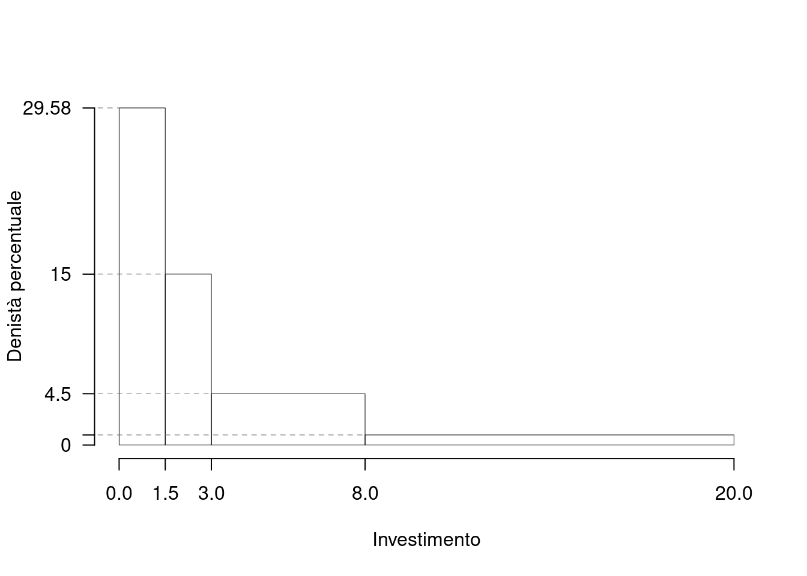
1.b (Punti 3/105 \(\rightarrow\) 0.89/31) Quante famiglie spendono meno di 5 mila euro all’anno?
\[\begin{eqnarray*} \%(X< 5 ) &=& f_{ 1 }\times 100+f_{ 2 }\times 100 +( 5 - 3 )\times h_{ 3 } \\ &=& ( 0.4438 )\times 100+( 0.225 )\times 100 +( 2 )\times 4.5 \\ &=& 0.7588 \times(100) \\ \#(X< 5 ) &\approx& 121 \end{eqnarray*}\]
1.c (Punti 2/105 \(\rightarrow\) 0.59/31) Che relazione dobbiamo aspettarci tra media, mediana e moda?
1.d (Punti 2/105 \(\rightarrow\) 0.59/31) La spesa media è pari a \(\bar x=3.4838\), mentre la SD è pari a \(SD=3.9497\). Se ogni famiglia spendesse 2 mila euro in più all’anno, quanto varrebbero la media e la SD dei dati trasformati?
Esercizio 2
2.a (Punti 14/105 \(\rightarrow\) 4.13/31) Si lancia una moneta perfetta 4 volte. Sia \(X\) la variabile casuale che conta il numero di Teste su 4 lanci. Calcolare la probabilità che \(X\leq 2\).
\[\begin{eqnarray*} P( X \leq 2 ) &=& \binom{ 4 }{ 0 } 0.5 ^{ 0 }(1- 0.5 )^{ 4 - 0 }+\binom{ 4 }{ 1 } 0.5 ^{ 1 }(1- 0.5 )^{ 4 - 1 }+\binom{ 4 }{ 2 } 0.5 ^{ 2 }(1- 0.5 )^{ 4 - 2 } \\ &=& 0.0625+0.25+0.375 \\ &=& 0.6875 \end{eqnarray*}\]
2.b (Punti 3/105 \(\rightarrow\) 0.89/31) Sia lancia una seconda moneta perfetta 3 volte. Sia \(Y\) la variabile casuale che conta il numero di Teste su 3 lanci. Calcolare la probabilità che \(X+Y=3\).
Siccome \(X+Y\sim\text{Binom(4+3,0.5)}\), allora \[\begin{eqnarray*} P( X+Y = 3 ) &=& \binom{ 7 }{ 3 } 0.5 ^{ 3 }(1- 0.5 )^{ 7 - 3 } \\ &=& 35 \times 0.5 ^{ 3 }(1- 0.5 )^{ 4 } \\ &=& 0.2734 \end{eqnarray*}\]
2.c (Punti 2/105 \(\rightarrow\) 0.59/31) Se \(P(A)=0.4\) e \(P(B)=0.8\), \(A\) e \(B\) possono essere incompatibili? Perché?
Se \(A\) e \(B\) fossero incompatibili, allora \(A\cap B=\emptyset\) allora \(P(A\cup B)=P(A)+P(B)\), ma essendo \(0.4+0.8=1.2>1\) allora \(A\cap B\neq\emptyset\)
2.d (Punti 2/105 \(\rightarrow\) 0.59/31) Cosa significa che la funzione di ripartizione è continua a destra?
Esercizio 3
3.a (Punti 14/105 \(\rightarrow\) 4.13/31) Un’urna 3 premi da \(\mbox{0}\) euro, 2 premi da \(\mbox{1}\) euro e un premio da \(\mbox{2}\) euro. Si estrae 100 volte con reintroduzione. Qual è la probabilità di vincere più di 60 euro?
\[\begin{eqnarray*} \mu &=& E(X_i) = \sum_{x\in S_X}x P(X=x)\\ &=& 0 \frac { 3 }{ 6 }+ 1 \frac { 2 }{ 6 }+ 2 \frac { 1 }{ 6 } \\ &=& 0.6667 \\ \sigma^2 &=& V(X_i) = \sum_{x\in S_X}x^2 P(X=x)-\mu^2\\ &=&\left( 0 ^2\frac { 3 }{ 6 }+ 1 ^2\frac { 2 }{ 6 }+ 2 ^2\frac { 1 }{ 6 } \right)-( 0.6667 )^2\\ &=& 0.5556 \end{eqnarray*}\] Teorema del Limite Centrale (somma VC qualunque)
Siano \(X_1\),…,\(X_n\), \(n=100\) VC IID, tc \(E(X_i)=\mu=0.6667\) e \(V(X_i)=\sigma^2=0.5556,\forall i\), posto: \[ S_n = X_1 + ... + X_n \] allora:\[\begin{eqnarray*} S_n & \mathop{\sim}\limits_{a}& N(n\mu,n\sigma^2) \\ &\sim & N(100\cdot0.6667,100\cdot0.5556) \\ &\sim & N(66.67,55.56) \end{eqnarray*}\]\[\begin{eqnarray*} P( S_n > 60 ) &=& P\left( \frac { S_n - n\mu }{ \sqrt{n\sigma^2} } > \frac { 60 - 66.67 }{\sqrt{ 55.56 }} \right) \\ &=& P\left( Z > -0.89 \right) \\ &=& 1-P(Z< -0.89 )\\ &=& 1-(1-\Phi( 0.89 )) \\ &=& 0.8133 \end{eqnarray*}\]
Esercizio 4
4.a (Punti 3/105 \(\rightarrow\) 0.89/31) (Punti 3) Si consideri il modello normale \(X\sim N(\mu,\sigma^2)\). Sia \(\hat\mu\) lo stimatore di massima verosimiglianza per \(\mu\)
\[ \hat\mu = \frac 1n \sum_{i=1}^n X_i \]
Dimostrare la consistenza di \(\hat\mu\).
4.b (Punti 3/105 \(\rightarrow\) 0.89/31) Definire lo Standard Error di uno stimatore.
4.c (Punti 3/105 \(\rightarrow\) 0.89/31) Definire la significatività di un test.
4.d (Punti 3/105 \(\rightarrow\) 0.89/31) Un sociologo sta conducendo uno studio sull’associazione tra il livello di istruzione e il comportamento di voto. Ha somministrato un questionario a 250 partecipanti, chiedendo loro di indicare il proprio livello di istruzione (Basso, Medio, Alto) e il comportamento di voto (Regolarmente, Occasionalmente, Mai). L’obiettivo è determinare se c’è un’associazione significativa tra il livello di istruzione e il comportamento di voto.
|
Livello di Istruzione
|
|||
|---|---|---|---|
| Basso | Medio | Alto | |
| Comportamento di Voto | |||
| Regolarmente | 45 | 25 | 10 |
| Occasionalmente | 35 | 30 | 15 |
| Mai | 20 | 45 | 25 |
Eseguito il test del \(\chi^2\) per verificare l’indipendenza tra il livello di istruzione e il comportamento di voto, il sociologo ottiene un \(p_\text{value}=0.0002391\). Quali conclusioni può trarne?
Esercizio 5
In uno studio sul reddito, in un campione di \(n=50\) individui, sono stati analizzati il livello di istruzione (in anni di studio, \(X\)) e il reddito annuale (in migliaia di euro, \(Y\)). Si osservano le seguenti statistiche: , \(\sum_{i=1}^{50}x_i=708\), \(\sum_{i=1}^{50}y_i=2080\), \(\sum_{i=1}^{50}x_i^2=10786\), \(\sum_{i=1}^{50}y_i^2=91132\) e \(\sum_{i=1}^{50}x_iy_i=31052\).
5.a (Punti 14/105 \(\rightarrow\) 4.13/31) Si è osservato \(x_3=10\) e \(y_3=29\), stimare il modello di regressione dove \(Y\) viene spiegata da \(X\) e calcolare il residuo per il punto \(i=3\).
\[\begin{eqnarray*} \bar x &=&\frac 1 n\sum_{i=1}^n x_i = \frac {1}{ 50 } 708 = 14.16 \\ \bar y &=&\frac 1 n\sum_{i=1}^n y_i = \frac {1}{ 50 } 2080 = 41.6 \\ \hat\sigma_X^2&=&\frac 1 n\sum_{i=1}^n x_i^2-\bar x^2=\frac {1}{ 50 } 10786 - 14.16 ^2= 15.21 \\ \hat\sigma_Y^2&=&\frac 1 n\sum_{i=1}^n y_i^2-\bar y^2=\frac {1}{ 50 } 91132 - 41.6 ^2= 92.08 \\ \text{cov}(X,Y)&=&\frac 1 n\sum_{i=1}^n x_i~y_i-\bar x\bar y=\frac {1}{ 50 } 31052 - 14.16 \cdot 41.6 = 31.98 \\ \hat\beta_1 &=& \frac{\text{cov}(X,Y)}{\hat\sigma_X^2} \\ &=& \frac{ 31.98 }{ 15.21 } = 2.102 \\ \hat\beta_0 &=& \bar y - \hat\beta_1 \bar x\\ &=& 41.6 - 2.1022 \times 14.16 = 11.83 \end{eqnarray*}\]\[\begin{eqnarray*} \hat y_i &=&\hat\beta_0+\hat\beta_1 x_i=\\ &=& 11.83 + 2.1022 \times 10 = 32.85 \\ \hat \varepsilon_i &=& y_i-\hat y_i\\ &=& 29 - 32.85 = -3.855 \end{eqnarray*}\]
5.b (Punti 3/105 \(\rightarrow\) 0.89/31) Qual è la percentuale di varianza spiegata dal modello?
5.c (Punti 2/105 \(\rightarrow\) 0.59/31) Definire i punti influenti.
5.d (Punti 2/105 \(\rightarrow\) 0.59/31) Se in un modello di regressione \(r=-1\) cosa significa?
5.e (Punti 2/105 \(\rightarrow\) 0.59/31) Se in un modello di regressione \(r=0.55\), \(\hat\sigma_X=0.9\) e \(\hat\beta_1=1.5\), quanto varrà \(\hat\sigma_Y\), la standard deviation di \(Y\)?
5.f (Punti 14/105 \(\rightarrow\) 4.13/31) Testare l’ipotesi che \(\beta_1\) sia uguale a zero, contro l’alternativa che sia diverso per diversi livelli di significatività e dare una valutazione approssimativa del \(p\)-value (ad esempio il \(p\)-value è minore di 0.001, compreso tra 0.05 e tra 0.01, ecc.).
\(\fbox{A}\) FORMULAZIONE DELLE IPOTESI
\[\begin{cases} H_0: \beta_1 = \beta_{1;H_0}=0 \\ H_1: \beta_1 \neq \beta_{1;H_0}=0 \end{cases}\]
\(\fbox{B}\) SCELTA E CALCOLO STATISTICA-TEST, \(T\) Test su un coefficiente di regressione: \(\Rightarrow\) t-Test.
\[\begin{eqnarray*} \hat{\sigma_\varepsilon}^2&=&(1-r^2)\hat\sigma_Y^2\\ &=& (1- 0.7302 )\times 92.08 \\ &=& 24.84 \\ S_\varepsilon^2 &=& \frac{n} {n-2} \hat{\sigma_\varepsilon}^2\\ &=& \frac{ 50 } { 50 -2} \hat{\sigma_\varepsilon}^2 \\ &=& \frac{ 50 } { 50 -2} \times 24.84 = 25.88 \end{eqnarray*}\]
E quindi\[\begin{eqnarray*} V(\hat\beta_{1}) &=& \frac{\sigma_{\varepsilon}^{2}} {n \hat{\sigma}^{2}_{X}} \\ \widehat{V(\hat\beta_{1})} &=& \frac{S_{\varepsilon}^{2}} {n \hat{\sigma}^{2}_{X}} \\ &=& \frac{ 25.88 } { 50 \times 15.21 } = 0.034 \\ \widehat{SE(\hat\beta_{1})} &=& \sqrt{ 0.034 }\\ &=& 0.1844 \end{eqnarray*}\]
\[\begin{eqnarray*} \frac{\hat\beta_{ 1 } - \beta_{ 1 ;H_0}} {\widehat{SE(\hat\beta_{ 1 })}}&\sim&t_{n-2}\\ t_{\text{obs}} &=& \frac{ ( 2.102 - 0 )} { 0.1844 } = 11.4 \, . \end{eqnarray*}\]
\(\fbox{C}\) CONCLUSIONE
Siccome \(H_1\) è bilaterale, considereremo \(\alpha/2\), anziché \(\alpha\)
\(\alpha=0.1, 0.05, 0.01, 0.001\) e quindi \(\alpha/2=0.05, 0.025, 0.005, 0.0005\)
I valori critici sono
\(t_{50-2;0.05}=1.6772\); \(t_{50-2;0.025}=2.0106\); \(t_{50-2;0.005}=2.6822\); \(t_{50-2;0.0005}=3.5051\)
Siccome \(|t_\text{obs}|=11.398>3.5051\), quindi rifiuto \(H_0\) sotto all’1‰,
\(p_\text{value}<0.001\), estremamente significativo \(\fbox{***}\).
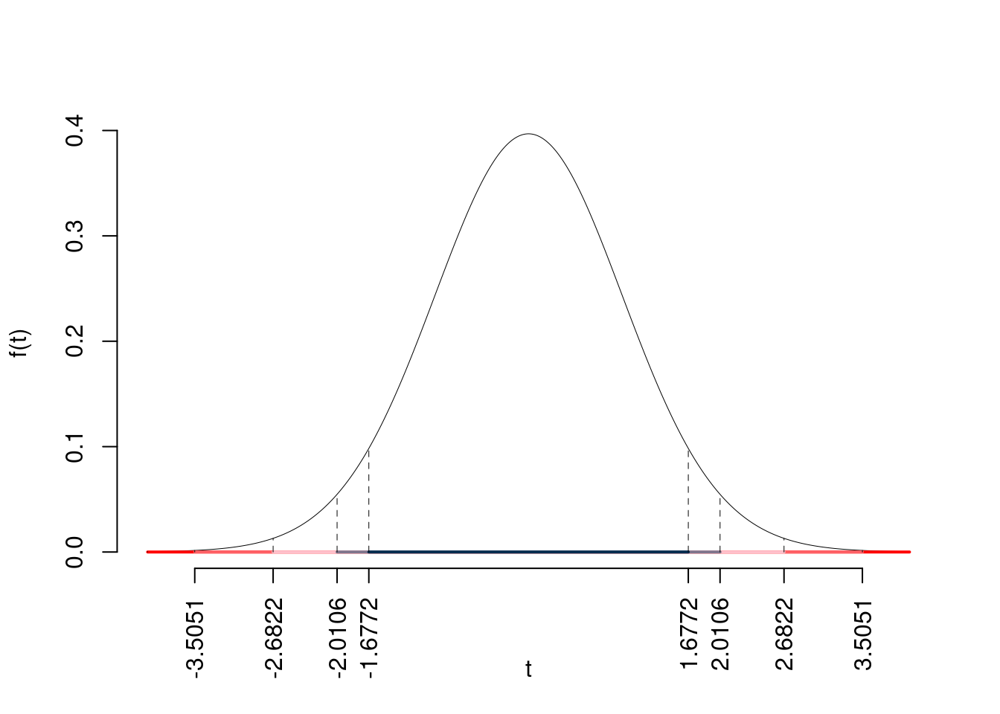
Il \(p_{\text{value}}\) è
\[ p_{\text{value}} = P(|T_{50-2}|>|11.4|)=2P(T_{50-2}>11.4)=3e-15 \]
Attenzione il calcolo del \(p_\text{value}\) con la \(T\) è puramente illustrativo e non può essere riprodotto senza una calcolatrice statistica adeguata.\[ 0 < p_\text{value}= 3e-15 \leq 0.001 \]
Prova di Statistica 2024/06/03-2
Esercizio 1
Su un campione di \(160\) famiglie della provincia di Milano è stato rilevata la spesa annua per le vacanze (espresso in migliaia di euro). Qui di seguito la distribuzione delle frequenze relative:
| \([\text{x}_j,\) | \(\text{x}_{j+1})\) | \(f_j\) |
|---|---|---|
| 0.0 | 1.5 | 0.0375 |
| 1.5 | 3.0 | 0.3688 |
| 3.0 | 8.0 | 0.4062 |
| 8.0 | 20.0 | 0.1875 |
| 1.0000 |
1.a (Punti 14/105 \(\rightarrow\) 4.13/31) Individuare l’intervallo modale.
| \([\text{x}_j,\) | \(\text{x}_{j+1})\) | \(n_j\) | \(f_j\) | \(b_j\) | \(h_j\) |
|---|---|---|---|---|---|
| 0.0 | 1.5 | 6 | 0.0375 | 1.5 | 2.500 |
| 1.5 | 3.0 | 59 | 0.3688 | 1.5 | 24.583 |
| 3.0 | 8.0 | 65 | 0.4062 | 5.0 | 8.125 |
| 8.0 | 20.0 | 30 | 0.1875 | 12.0 | 1.562 |
| 160 | 1.0000 | 20.0 |
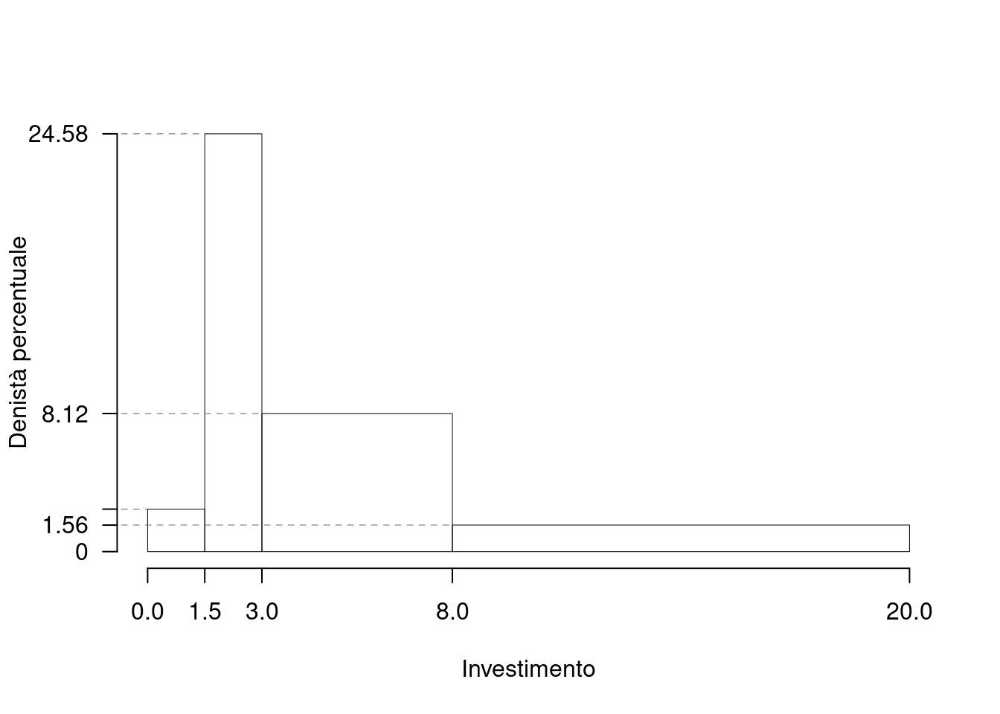
1.b (Punti 3/105 \(\rightarrow\) 0.89/31) Quante famiglie investono più di 4 mila euro all’anno?
\[\begin{eqnarray*} \%(X> 4 ) &=& ( 8 - 4 )\times h_{ 3 }+ f_{ 4 }\times 100 \\ &=& ( 4 )\times 8.125 + ( 0.1875 )\times 100 \\ &=& 0.5125 \times(100)\\ \#(X> 4 ) &\approx& 82 \end{eqnarray*}\]
1.c (Punti 2/105 \(\rightarrow\) 0.59/31) Che relazione dobbiamo aspettarci tra media, mediana e moda?
1.d (Punti 2/105 \(\rightarrow\) 0.59/31) La spesa media è pari a \(5.6714\), mentre la varianza è pari a \(19.5627\). Se ogni famiglia aumentasse la propria spesa del 2%, quanto varrebbero la media e la varianza dei dati così trasformati?
\[ \bar y = 5.7848\qquad \sigma^2 = 20.3531 \]
Esercizio 2
2.a (Punti 14/105 \(\rightarrow\) 4.13/31) Sia \(X\) numero settimanale di pratiche inevase dall’ufficio provinciale, si assume \(X\sim\text{Pois}(3.5)\). Calcolare la probabilità che \(X\geq 3\).
\[\begin{eqnarray*} P( X \geq 3 ) &=& 1-P( X < 3 ) \\ &=& 1-\left( \frac{ 3.5 ^{ 0 }}{ 0 !}e^{- 3.5 }+\frac{ 3.5 ^{ 1 }}{ 1 !}e^{- 3.5 }+\frac{ 3.5 ^{ 2 }}{ 2 !}e^{- 3.5 } \right)\\ &=& 1-( 0.0302+0.1057+0.185 )\\ &=& 1- 0.3209 \\ &=& 0.6791 \end{eqnarray*}\]
2.b (Punti 3/105 \(\rightarrow\) 0.89/31) Sia \(Y\) numero settimanale di pratiche inevase dall’ufficio comunale, si assume \(Y\sim\text{Pois}(2)\) e si assume \(X\) indipendente da \(Y\). Calcolare la probabilità che \(X+Y=5\).
\[\begin{eqnarray*} P( X = 5 ) &=& \frac{ 5.5 ^{ 5 }}{ 5 !}e^{- 5.5 }\\ &=& 41.9403645833333 \times 0.0041 \\ &=& 0.1714 \end{eqnarray*}\]
2.c (Punti 2/105 \(\rightarrow\) 0.59/31) Se \(P(A)=0.4\) e \(P(B)=0.4\), \(A\) e \(B\) possono essere incompatibili? Perché?
2.d (Punti 2/105 \(\rightarrow\) 0.59/31) Sia \(X\) una variabile casuale e sia \(F\) la sa funzione di ripartizione. Siano \(a\) e \(b\) due numeri reali, \(a<b\), esprimere \[ P(a<X\leq b) \] in termini di \(F\).
Esercizio 3
3.a (Punti 14/105 \(\rightarrow\) 4.13/31) Un’urna 4 premi da \(\mbox{0}\) euro, 3 premi da \(\mbox{1}\) euro e 2 premi da \(\mbox{2}\) euro. Si estrae 50 volte con reintroduzione. Qual è la probabilità che la media delle vincite ottenute sia minore di 0.6 euro?
\[\begin{eqnarray*} \mu &=& E(X_i) = \sum_{x\in S_X}x P(X=x)\\ &=& 0 \frac { 4 }{ 9 }+ 1 \frac { 3 }{ 9 }+ 2 \frac { 2 }{ 9 } \\ &=& 0.7778 \\ \sigma^2 &=& V(X_i) = \sum_{x\in S_X}x^2 P(X=x)-\mu^2\\ &=&\left( 0 ^2\frac { 4 }{ 9 }+ 1 ^2\frac { 3 }{ 9 }+ 2 ^2\frac { 2 }{ 9 } \right)-( 0.7778 )^2\\ &=& 0.6173 \end{eqnarray*}\] Teorema del Limite Centrale (media VC qualunque)
Siano \(X_1\),…,\(X_n\), \(n=50\) VC IID, tc \(E(X_i)=\mu=0.7778\) e \(V(X_i)=\sigma^2=0.6173,\forall i\), posto: \[ \bar X=\frac{S_n}n =\frac{X_1 + ... + X_n}n \] allora:\[\begin{eqnarray*} \bar X & \mathop{\sim}\limits_{a}& N(\mu,\sigma^2/n) \\ &\sim & N\left(0.7778,\frac{0.6173}{50}\right) \\ &\sim & N(0.7778,0.01235) \end{eqnarray*}\]\[\begin{eqnarray*} P( \bar X < 0.6 ) &=& P\left( \frac { \bar X - \mu }{ \sqrt{\sigma^2/n} } < \frac { 0.6 - 0.7778 }{\sqrt{ 0.01235 }} \right) \\ &=& P\left( Z < -1.6 \right) \\ &=& 1-\Phi( 1.6 ) \\ &=& 0.0548 \end{eqnarray*}\]
Esercizio 4
4.a (Punti 3/105 \(\rightarrow\) 0.89/31) (Punti 3) Si consideri il modello di Bernoulli \(X\sim\text{Ber}(\pi)\). Sia \(\hat\pi\) lo stimatore di massima verosimiglianza per \(\pi\)
\[ \hat\pi = \frac 1n \sum_{i=1}^n X_i \]
Dimostrare la consistenza di \(\hat\pi\).
4.b (Punti 3/105 \(\rightarrow\) 0.89/31) Che differenza c’è tra lo Standard Error di uno stimatore e la Deviazione Standard del campione?
4.c (Punti 3/105 \(\rightarrow\) 0.89/31) Definire la potenza di un test.
4.d (Punti 3/105 \(\rightarrow\) 0.89/31) Un economista sta conducendo uno studio sull’associazione tra il livello di istruzione e il possesso di una casa. Ha somministrato un questionario a 160 partecipanti, chiedendo loro di indicare il proprio livello di istruzione (Basso, Medio, Alto) e se possiedono una casa (Sì, No). L’obiettivo è determinare se c’è un’associazione significativa tra il livello di istruzione e il possesso di una casa.
|
Livello di Istruzione
|
|||
|---|---|---|---|
| Basso | Medio | Alto | |
|
Possesso di Casa |
|||
| Sì | 30 | 10 | 35 |
| No | 20 | 40 | 25 |
Eseguito il test del \(\chi^2\) per verificare l’indipendenza tra il livello di istruzione e il possesso di una casa, l’economista ottiene un \(p_\text{value}=0.00002588\). Quali conclusioni può trarne?
Esercizio 5
In uno studio sul reddito, in un campione di \(n=50\) individui, sono stati analizzati il livello di istruzione (in anni di studio, \(X\)) e la propensione a credere in teorie del complotto (in opportuna scala, \(Y\)). Si osservano le seguenti statistiche: , \(\sum_{i=1}^{50}x_i=715\), \(\sum_{i=1}^{50}y_i=2270\), \(\sum_{i=1}^{50}x_i^2=10791\), \(\sum_{i=1}^{50}y_i^2=105344\) e \(\sum_{i=1}^{50}x_iy_i=33221\).
5.a (Punti 14/105 \(\rightarrow\) 4.13/31) Si è osservato \(x_3=13\) e \(y_3=40\), stimare il modello di regressione dove \(Y\) viene spiegata da \(X\) e calcolare il residuo per il punto \(i=3\).
\[\begin{eqnarray*} \bar x &=&\frac 1 n\sum_{i=1}^n x_i = \frac {1}{ 50 } 715 = 14.3 \\ \bar y &=&\frac 1 n\sum_{i=1}^n y_i = \frac {1}{ 50 } 2270 = 45.4 \\ \hat\sigma_X^2&=&\frac 1 n\sum_{i=1}^n x_i^2-\bar x^2=\frac {1}{ 50 } 10791 - 14.3 ^2= 11.33 \\ \hat\sigma_Y^2&=&\frac 1 n\sum_{i=1}^n y_i^2-\bar y^2=\frac {1}{ 50 } 105344 - 45.4 ^2= 45.72 \\ \text{cov}(X,Y)&=&\frac 1 n\sum_{i=1}^n x_i~y_i-\bar x\bar y=\frac {1}{ 50 } 33221 - 14.3 \cdot 45.4 = 15.2 \\ \hat\beta_1 &=& \frac{\text{cov}(X,Y)}{\hat\sigma_X^2} \\ &=& \frac{ 15.2 }{ 11.33 } = 1.342 \\ \hat\beta_0 &=& \bar y - \hat\beta_1 \bar x\\ &=& 45.4 - 1.3416 \times 14.3 = 26.22 \end{eqnarray*}\]\[\begin{eqnarray*} \hat y_i &=&\hat\beta_0+\hat\beta_1 x_i=\\ &=& 26.22 + 1.3416 \times 13 = 43.66 \\ \hat \varepsilon_i &=& y_i-\hat y_i\\ &=& 40 - 43.66 = -3.656 \end{eqnarray*}\]
5.b (Punti 3/105 \(\rightarrow\) 0.89/31) Il modello si adatta bene ai dati?
\[\begin{eqnarray*} r&=&\frac{\text{cov}(X,Y)}{\sigma_X\sigma_Y}=\frac{ 15.2 }{ 3.366 \times 6.762 }= 0.6678 \\r^2&=& 0.446 < 0.75 \end{eqnarray*}\] Il modello non si adatta bene ai dati.
5.c (Punti 2/105 \(\rightarrow\) 0.59/31) Definire i punti di leva.
5.d (Punti 2/105 \(\rightarrow\) 0.59/31) Se in un modello di regressione \(r=+1\) cosa significa?
5.e (Punti 2/105 \(\rightarrow\) 0.59/31) Se in un modello di regressione \(r<0\) è possibile che \(\hat\beta_1>0\)? Perché?
5.f (Punti 14/105 \(\rightarrow\) 4.13/31) Testare l’ipotesi che \(\beta_0\) sia uguale a 35, contro l’alternativa che sia minore per diversi livelli di significatività e dare una valutazione approssimativa del \(p\)-value (ad esempio il \(p\)-value è minore di 0.0005, compreso tra 0.05 e 0.01, ecc.).
\(\fbox{A}\) FORMULAZIONE DELLE IPOTESI
\[\begin{cases} H_0: \beta_0 = \beta_{0;H_0}=35 \\ H_1: \beta_0 < \beta_{0;H_0}=35 \end{cases}\]
\(\fbox{B}\) SCELTA E CALCOLO STATISTICA-TEST, \(T\) Test su un coefficiente di regressione: \(\Rightarrow\) t-Test.
\[\begin{eqnarray*} \hat{\sigma_\varepsilon}^2&=&(1-r^2)\hat\sigma_Y^2\\ &=& (1- 0.446 )\times 45.72 \\ &=& 25.33 \\ S_\varepsilon^2 &=& \frac{n} {n-2} \hat{\sigma_\varepsilon}^2\\ &=& \frac{ 50 } { 50 -2} \hat{\sigma_\varepsilon}^2 \\ &=& \frac{ 50 } { 50 -2} \times 25.33 = 26.38 \end{eqnarray*}\]
E quindi\[\begin{eqnarray*}
V(\hat\beta_{0}) &=& \sigma_{\varepsilon}^{2} \left( \frac{1} {n} + \frac{\bar{x}^{2}} {n \hat{\sigma}^{2}_{X}} \right)\\
\widehat{V(\hat\beta_{0})} &=& S_{\varepsilon}^{2}\left( \frac{1} {n} + \frac{\bar{x}^{2}} {n \hat{\sigma}^{2}_{X}} \right)\ \\
&=& 26.38 \times\left( \frac{1} { 50 } + \frac{ 14.3 ^{2}} { 50 \times 11.33 } \right)\\
\widehat{SE(\hat\beta_{0})} &=& \sqrt{ 10.05 }\\
&=& 3.17
\end{eqnarray*}\]
\[\begin{eqnarray*}
\frac{\hat\beta_{ 0 } - \beta_{ 0 ;H_0}} {\widehat{SE(\hat\beta_{ 0 })}}&\sim&t_{n-2}\\
t_{\text{obs}}
&=& \frac{ ( 26.22 - 35 )} { 3.17 }
= -2.771 \, .
\end{eqnarray*}\]
\(\fbox{C}\) CONCLUSIONE
Consideriamo \(\alpha=0.1, 0.05, 0.01, 0.001\)
I valori critici sono
\(t_{50-2;0.1}=-1.2994\); \(t_{50-2;0.05}=-1.6772\); \(t_{50-2;0.01}=-2.4066\); \(t_{50-2;0.001}=-3.2689\)
Siccome \(-1.6772<t_\text{obs}=-2.7708<-1.2994\), quindi rifiuto \(H_0\) all’1%,
\(0.001<p_\text{value}<0.01\), molto significativo \(\fbox{**}\).
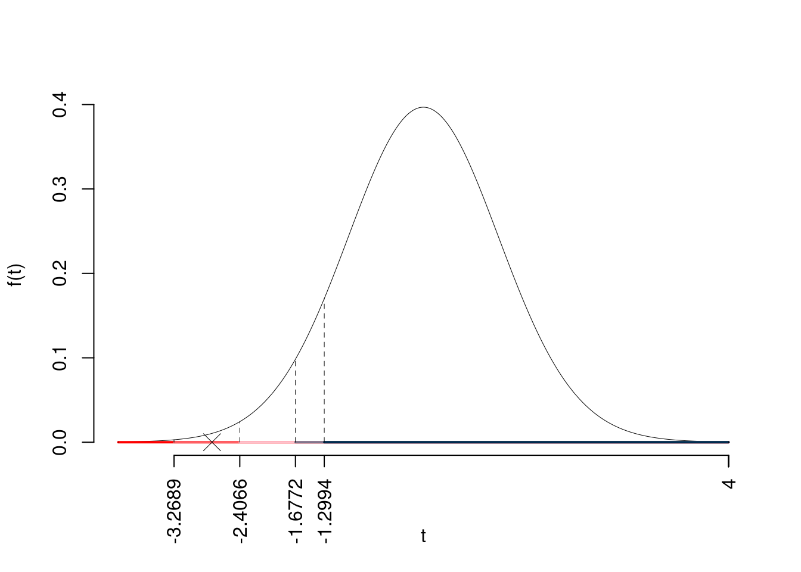
Il \(p_{\text{value}}\) è
\[ p_{\text{value}} = P(T_{50-2}<-2.77)=0.003966 \]
Attenzione il calcolo del \(p_\text{value}\) con la \(T\) è puramente illustrativo e non può essere riprodotto senza una calcolatrice statistica adeguata.\[ 0.001 < p_\text{value}= 0.003966 \leq 0.01 \]
Prova di Statistica 2024/06/03-3
Esercizio 1
Su un campione di \(160\) famiglie della provincia di Milano è stato rilevata la spesa annua per le vacanze (espresso in migliaia di euro). Qui di seguito la distribuzione delle densità percentuali:
| \([\text{x}_j,\) | \(\text{x}_{j+1})\) | \(h_j\) |
|---|---|---|
| 0.0 | 1.5 | 10.833 |
| 1.5 | 3.0 | 21.667 |
| 3.0 | 8.0 | 7.125 |
| 8.0 | 20.0 | 1.302 |
1.a (Punti 14/105 \(\rightarrow\) 4.13/31) Calcolare il valore approssimativo della mediana.
\[\begin{eqnarray*} p &=& 0.5 , \text{essendo }F_{ 3 }= 0.8438 > 0.5 \Rightarrow j_{ 0.5 }= 3 \\ x_{ 0.5 } &=& x_{\text{inf}; 3 } + \frac{ { 0.5 } - F_{ 2 }} {f_{ 3 }} \cdot b_{ 3 } \\ &=& 3 + \frac {{ 0.5 } - 0.4875 } { 0.3563 } \cdot 5 \\ &=& 3.175 \end{eqnarray*}\] 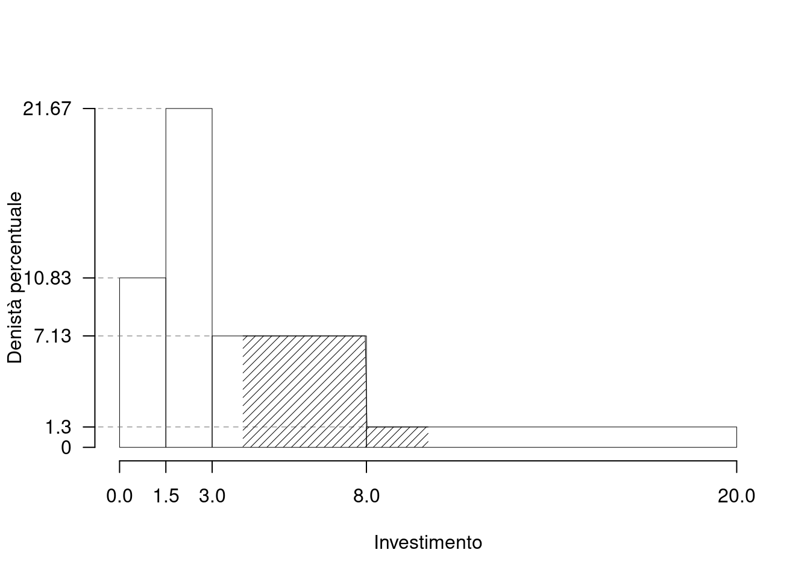
1.b (Punti 3/105 \(\rightarrow\) 0.89/31) Quante famiglie spendono tra 4 mila e 10 mila euro l’anno?
\[\begin{eqnarray*} \%(4<X<10) &=& (8-4)\times h_{3}+ (10-8)\times h_{4} \\ &=& (4)\times 7.125+ (2)\times 1.3021 \\ &=& 0.311 \times(100)\\ \#( 4 < X < 10 ) &\approx& 50 \end{eqnarray*}\]
1.c (Punti 2/105 \(\rightarrow\) 0.59/31) Che relazione dobbiamo aspettarci tra media, mediana e moda?
1.d (Punti 2/105 \(\rightarrow\) 0.59/31) La spesa media è pari a \(4.9551\), mentre la varianza è pari a \(19.0807\). Se ogni famiglia diminuisse la propria spesa del 2%, quanto varrebbero la media e la varianza dei dati così trasformati?
\[ \bar y = 4.856\qquad \sigma^2 = 18.3251 \]
Esercizio 2
2.a (Punti 14/105 \(\rightarrow\) 4.13/31) Sia \(X\sim N(5,2)\) sia \(A=\{X>4\}\) e \(B=\{X<6\}\). Calcolare \(P(A\cap B)\).
\[\begin{eqnarray*} P( 4 < X \leq 6 ) &=& P\left( \frac { 4 - 5 }{\sqrt{ 2 }} < \frac { X - \mu }{ \sigma } \leq \frac { 6 - 5 }{\sqrt{ 2 }}\right) \\ &=& P\left( -0.71 < Z \leq 0.71 \right) \\ &=& \Phi( 0.71 )-\Phi( -0.71 )\\ &=& \Phi( 0.71 )-(1-\Phi( 0.71 )) \\ &=& 0.7611 -(1- 0.7611 ) \\ &=& 0.5222 \end{eqnarray*}\]
2.b (Punti 3/105 \(\rightarrow\) 0.89/31) Sia \(Y\sim N(3,1)\), \(X\) e \(Y\) indipendenti, posto \(W=X-Y\), calcolare \(P(W<0)\).
\[\begin{eqnarray*} P( X < 0 ) &=& P\left( \frac { X - \mu }{ \sigma } < \frac { 0 - 2 }{\sqrt{ 3 }} \right) \\ &=& P\left( Z < -1.15 \right) \\ &=& 1-\Phi( 1.15 ) \\ &=& 0.1251 \end{eqnarray*}\]
2.c (Punti 2/105 \(\rightarrow\) 0.59/31) Se \(P(A)=0.4\) e \(P(B)=0.6\), in che relazione sono \(A\) e \(B\)?
2.d (Punti 2/105 \(\rightarrow\) 0.59/31) Sia \(X\) una variabile casuale e sia \(F\) la sua funzione di ripartizione. Cosa significa che \(F\) è una funzione crescente?
Esercizio 3
3.a (Punti 14/105 \(\rightarrow\) 4.13/31) Un’urna 4 premi da \(\mbox{0}\) euro, 2 premi da \(\mbox{1}\) euro. Si estrae 50 volte con reintroduzione.
Qual è la probabilità che la la vincita totale sia maggiore di 50?
Teorema del Limite Centrale (somma di Bernoulli)
Siano \(X_1\),…,\(X_n\), \(n=50\) VC IID, tc \(X_i\sim\text{Ber}(\pi=0.3333)\)\(,\forall i\), posto: \[ S_n = X_1 + ... + X_n \] allora:\[\begin{eqnarray*} S_n & \mathop{\sim}\limits_{a}& N(n\pi,n\pi(1-\pi)) \\ &\sim & N(50\cdot0.3333,50\cdot0.3333\cdot(1-0.3333)) \\ &\sim & N(16.67,11.11) \end{eqnarray*}\]\[\begin{eqnarray*} P( S_n > 50 ) &=& P\left( \frac { S_n - n\pi }{ \sqrt{n\pi(1-\pi)} } > \frac { 50 - 16.67 }{\sqrt{ 11.11 }} \right) \\ &=& P\left( Z > 10 \right) \\ &=& 1-P(Z< 10 )\\ &=& 1-\Phi( 10 ) \\ &=& 0 \end{eqnarray*}\]
Esercizio 4
4.a (Punti 3/105 \(\rightarrow\) 0.89/31) (Punti 3) Si consideri il modello binomiale \(X\sim\text{Pois}(\lambda)\). Sia \(\hat\lambda\) lo stimatore di massima verosimiglianza per \(\mu\)
\[ \hat\lambda = \frac 1n \sum_{i=1}^n X_i \]
Dimostrare la consistenza di \(\hat\lambda\).
4.b (Punti 3/105 \(\rightarrow\) 0.89/31) Che differenza c’è tra lo Standard Error di uno stimatore e la Deviazione Standard di popolazione?
4.c (Punti 3/105 \(\rightarrow\) 0.89/31) Definire gli errori di primo e di secondo tipo.
4.d (Punti 3/105 \(\rightarrow\) 0.89/31) Un biologo sta studiando il numero di cellule di una certa specie osservate in campioni di terreno. Ha raccolto dati sul numero di cellule in 45 campioni. I dati osservati sono riportati nella tabella seguente. L’obiettivo è determinare se i dati seguono una distribuzione di Poisson.
| Numero | Osservati | Attesi |
|---|---|---|
| 0 | 5 | 3.49 |
| 1 | 8 | 8.93 |
| 2 | 12 | 11.41 |
| 3 | 7 | 9.72 |
| 4 | 6 | 6.21 |
| 5 | 4 | 3.17 |
| 6 | 3 | 1.35 |
Eseguito il test del \(\chi^2\) per verificare la conformità dei dati alla distribuzione di Poisson, il biologo ottiene un \(p_\text{value}=0.7175\). Il modello Poisson è adeguato?
Esercizio 5
5.a (Punti 3/105 \(\rightarrow\) 0.89/31) (Punti 12) In un’indagine sull’opinione sul reddito di inclusione sono stati intervistate 150 persone che vivono al nord e 180 che vivono al sud: 60 su 150 che vivono al nord sono favorevoli al reddito di cittadinanza mentre 95 su 180 che vivono al sud sono favorevoli.
Testare l’ipotesi che la proporzione di persone favorevoli al reddito di cittadinanza che vivono al sud sia uguale a quelle di quelli che vivono al nord, contro l’alternativa che siano diverse.
5.b (Punti 11/105 \(\rightarrow\) 3.25/31) Calcolare e discutere il \(p\)-value del test precedente.
Test \(Z\) per due proporzioni
\(\fbox{A}\) FORMULAZIONE DELLE IPOTESI
\[\begin{cases} H_0: \pi_\text{N} = \pi_\text{S} \\ H_1: \pi_\text{N} \neq \pi_\text{S} \end{cases}\]
\(\fbox{B}\) SCELTA E CALCOLO STATISTICA-TEST, \(Z\)
\[\hat\pi_\text{ N }=\frac{s_\text{ N }}{n_\text{ N }}=\frac{ 60 }{ 150 }= 0.4 \qquad \hat\pi_\text{ S }=\frac{s_\text{ S }}{n_\text{ S }}=\frac{ 95 }{ 180 }= 0.5278 \]Calcoliamo la proporzione comune sotto \(H_0\) \[ \pi_C=\frac{s_\text{ N }+s_\text{ S }}{n_\text{ N }+n_\text{ S }}= \frac{ 155 }{ 330 }= 0.4697 \]\[\begin{eqnarray*} \frac{\hat\pi_\text{ N } - \hat\pi_\text{ S }} {\sqrt{\frac {\pi_C(1-\pi_C)}{n_\text{ N }}+\frac {\pi_C(1-\pi_C)}{n_\text{ S }}}}&\sim&N(0,1)\\ z_{\text{obs}} &=& \frac{ ( 0.4 - 0.5278 )} {\sqrt{\frac{ 0.4697 (1- 0.4697 )}{ 150 }+\frac{ 0.4697 (1- 0.4697 )}{ 180 }}} = -2.316 \, . \end{eqnarray*}\]
\(\fbox{C}\) CONCLUSIONE
Il \(p_{\text{value}}\) è
\[ p_{\text{value}} = P(|Z|>|-2.32|)=2P(Z>2.32)=0.020567 \]
\[
0.01 < p_\text{value}= 0.020567 \leq 0.05
\]
Rifiuto \(H_0\) al 5%,
\(0.01<p_\text{value}<0.05\), significativo \(\fbox{*}\).
Esercizio 6
In uno studio sul reddito, in un campione di \(n=50\) individui, sono stati analizzati il livello di istruzione (in anni di studio, \(X\)) e il numero di libri letti l’anno (\(Y\)). Si osservano le seguenti statistiche: , \(\sum_{i=1}^{50}x_i=676\), \(\sum_{i=1}^{50}y_i=750\), \(\sum_{i=1}^{50}x_i^2=9768\), \(\sum_{i=1}^{50}y_i^2=12126\) e \(\sum_{i=1}^{50}x_iy_i=10794\).
6.a (Punti 14/105 \(\rightarrow\) 4.13/31) Si è osservato \(x_3=19\) e \(y_3=21\), stimare il modello di regressione dove \(Y\) viene spiegata da \(X\) e calcolare il residuo per il punto \(i=3\).
\[\begin{eqnarray*} \bar x &=&\frac 1 n\sum_{i=1}^n x_i = \frac {1}{ 50 } 676 = 13.52 \\ \bar y &=&\frac 1 n\sum_{i=1}^n y_i = \frac {1}{ 50 } 750 = 15 \\ \hat\sigma_X^2&=&\frac 1 n\sum_{i=1}^n x_i^2-\bar x^2=\frac {1}{ 50 } 9768 - 13.52 ^2= 12.57 \\ \hat\sigma_Y^2&=&\frac 1 n\sum_{i=1}^n y_i^2-\bar y^2=\frac {1}{ 50 } 12126 - 15 ^2= 17.52 \\ \text{cov}(X,Y)&=&\frac 1 n\sum_{i=1}^n x_i~y_i-\bar x\bar y=\frac {1}{ 50 } 10794 - 13.52 \cdot 15 = 13.08 \\ \hat\beta_1 &=& \frac{\text{cov}(X,Y)}{\hat\sigma_X^2} \\ &=& \frac{ 13.08 }{ 12.57 } = 1.041 \\ \hat\beta_0 &=& \bar y - \hat\beta_1 \bar x\\ &=& 15 - 1.0406 \times 13.52 = 0.931 \end{eqnarray*}\]\[\begin{eqnarray*} \hat y_i &=&\hat\beta_0+\hat\beta_1 x_i=\\ &=& 0.931 + 1.0406 \times 19 = 20.7 \\ \hat \varepsilon_i &=& y_i-\hat y_i\\ &=& 21 - 20.7 = 0.2975 \end{eqnarray*}\]
6.b (Punti 3/105 \(\rightarrow\) 0.89/31) Dare un’interpretazione dei parametri di regressione stimati.
6.c (Punti 2/105 \(\rightarrow\) 0.59/31) Definire gli outliers.
6.d (Punti 2/105 \(\rightarrow\) 0.59/31) Se in un modello di regressione \(r=0\) cosa significa?
6.e (Punti 2/105 \(\rightarrow\) 0.59/31) Se in un modello di regressione \(r=0.55\), \(\hat\sigma_Y=0.9\) e \(\hat\beta_1=1.5\), quanto varrà \(\hat\sigma_X\), la standard deviation di \(X\)?
Prova di Statistica 2024/06/21-1
Esercizio 1
Su un campione di \(250\) famiglie dell’Emilia-Romagna sono stati rilevati i consumi annui in beni tecnologici (dati espressi in migliaia di euro). Qui di seguito la distribuzione delle frequenze cumulate:
| \([\text{x}_j,\) | \(\text{x}_{j+1})\) | \(F_j\) |
|---|---|---|
| 0.0 | 1.5 | 0.464 |
| 1.5 | 3.0 | 0.696 |
| 3.0 | 8.0 | 0.884 |
| 8.0 | 20.0 | 1.000 |
1.a (Punti 14/105 \(\rightarrow\) 4.13/31) Disegnare l’istogramma di densità percentuale.
| \([\text{x}_j,\) | \(\text{x}_{j+1})\) | \(n_j\) | \(f_j\) | \(b_j\) | \(h_j\) |
|---|---|---|---|---|---|
| 0.0 | 1.5 | 116 | 0.464 | 1.5 | 30.9333 |
| 1.5 | 3.0 | 58 | 0.232 | 1.5 | 15.4667 |
| 3.0 | 8.0 | 47 | 0.188 | 5.0 | 3.7600 |
| 8.0 | 20.0 | 29 | 0.116 | 12.0 | 0.9667 |
| 250 | 1.000 | 20.0 |
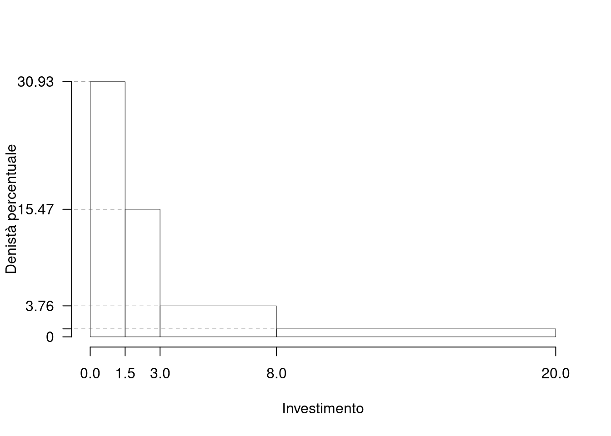
1.b (Punti 3/105 \(\rightarrow\) 0.89/31) Quante famiglie spendono meno di 5 mila euro all’anno?
\[\begin{eqnarray*} \%(X< 5 ) &=& f_{ 1 }\times 100+f_{ 2 }\times 100 +( 5 - 3 )\times h_{ 3 } \\ &=& ( 0.464 )\times 100+( 0.232 )\times 100 +( 2 )\times 3.76 \\ &=& 0.7712 \times(100) \\ \#(X< 5 ) &\approx& 193 \end{eqnarray*}\]
1.c (Punti 2/105 \(\rightarrow\) 0.59/31) Che relazione dobbiamo aspettarci tra media, mediana e moda?
1.d (Punti 2/105 \(\rightarrow\) 0.59/31) La spesa media è pari a \(\bar x=3.5222\), mentre la SD è pari a \(SD=4.2267\). Se ogni famiglia spendesse 2 mila euro in più all’anno, quanto varrebbero la media e la SD dei dati trasformati?
Esercizio 2
2.a (Punti 14/105 \(\rightarrow\) 4.13/31) Si consideri un’urna che ha una pallina bianche e due nere. Si estrae 4 volte con reinserimento. Sia \(X\) la variabile casuale che conta il numero di bianche su 4 estrazioni. Calcolare la probabilità che \(X\leq 2\).
\[\begin{eqnarray*} P( X \leq 2 ) &=& \binom{ 4 }{ 0 } 0.3333 ^{ 0 }(1- 0.3333 )^{ 4 - 0 }+\binom{ 4 }{ 1 } 0.3333 ^{ 1 }(1- 0.3333 )^{ 4 - 1 }+\binom{ 4 }{ 2 } 0.3333 ^{ 2 }(1- 0.3333 )^{ 4 - 2 } \\ &=& 0.1976+0.3951+0.2963 \\ &=& 0.889 \end{eqnarray*}\]
2.b (Punti 3/105 \(\rightarrow\) 0.89/31) Sia \(X\) la VC del punto precedente e sia \(Y\sim N(0,1)\), \(X\) ed \(Y\) indipendenti. Considerato \(A=\{X\leq 2\}\), \(B=\{Y<1\}\), calcolare \(P(A\cup B)\).
\[\begin{eqnarray} P( A \cup B ) &=& P( A )+P( B )-P( A \cap B ) \\ &=& P( A )+P( B )-P( A )\cdot ( B ) \\ &=& 0.8889 + 0.8413 - 0.8889 \times 0.8413 \\ &=& 0.9824 \end{eqnarray}\]
2.c (Punti 2/105 \(\rightarrow\) 0.59/31) Se \(A\) e \(B\), sono due eventi tali che \(P(B|A)=1\), determinare \(A\cap B\).
Se \(P(B|A)=P(A\cap B)/P(A)\) e \(P(B|A)=P(A\cap B)/P(A)=1\) se e solo se \(P(A\cap B)=P(A)\) e quindi \(A\cap B = A\).
2.d (Punti 2/105 \(\rightarrow\) 0.59/31) Sia \(X\) una Bernoulli di parametro \(\pi\), \(X\sim\text{Ber}(\pi)\) e sia \(F\) la sua funzione di ripartizione. Se \(F(0)=0.6\), quanto vale \(\pi\)?
Esercizio 3
3.a (Punti 14/105 \(\rightarrow\) 4.13/31) Un’urna contiene 6 premi da \(\mbox{0}\) euro, 3 premi da \(\mbox{1}\) euro e un premio da \(\mbox{2}\) euro. Si estrae 100 volte con reintroduzione. Qual è la probabilità di vincere più di 55 euro?
\[\begin{eqnarray*} \mu &=& E(X_i) = \sum_{x\in S_X}x P(X=x)\\ &=& 0 \frac { 6 }{ 10 }+ 1 \frac { 3 }{ 10 }+ 2 \frac { 1 }{ 10 } \\ &=& 0.5 \\ \sigma^2 &=& V(X_i) = \sum_{x\in S_X}x^2 P(X=x)-\mu^2\\ &=&\left( 0 ^2\frac { 6 }{ 10 }+ 1 ^2\frac { 3 }{ 10 }+ 2 ^2\frac { 1 }{ 10 } \right)-( 0.5 )^2\\ &=& 0.45 \end{eqnarray*}\] Teorema del Limite Centrale (somma VC qualunque)
Siano \(X_1\),…,\(X_n\), \(n=100\) VC IID, tc \(E(X_i)=\mu=0.5\) e \(V(X_i)=\sigma^2=0.45,\forall i\), posto: \[ S_n = X_1 + ... + X_n \] allora:\[\begin{eqnarray*} S_n & \mathop{\sim}\limits_{a}& N(n\mu,n\sigma^2) \\ &\sim & N(100\cdot0.5,100\cdot0.45) \\ &\sim & N(50,45) \end{eqnarray*}\]\[\begin{eqnarray*} P( S_n > 55 ) &=& P\left( \frac { S_n - n\mu }{ \sqrt{n\sigma^2} } > \frac { 55 - 50 }{\sqrt{ 45 }} \right) \\ &=& P\left( Z > 0.75 \right) \\ &=& 1-P(Z< 0.75 )\\ &=& 1-\Phi( 0.75 ) \\ &=& 0.2266 \end{eqnarray*}\]
Esercizio 4
4.a (Punti 3/105 \(\rightarrow\) 0.89/31) (Punti 3) Si consideri il modello normale \(X\sim N(\mu,\sigma^2)\). Sia \(\hat\mu\) lo stimatore di massima verosimiglianza per \(\mu\)
\[ \hat\mu = \frac 1n \sum_{i=1}^n X_i \]
Ricavare il suo Standard Error teorico e quello stimato.
4.b (Punti 3/105 \(\rightarrow\) 0.89/31) Se \(\hat\theta\) è lo stimatore di massima verosimiglianza per \(\theta\), con \(E(\hat\theta)=\theta\) e \(V(\hat\theta)=I^{-1}(\theta)\). Com’è distribuito asintoticamente \(\hat\theta\)?
4.c (Punti 3/105 \(\rightarrow\) 0.89/31) Definire la significatività di un test.
4.d (Punti 3/105 \(\rightarrow\) 0.89/31) Un nutrizionista sta conducendo uno studio sull’associazione tra il tipo di dieta e lo stato di salute. Ha somministrato un questionario a 220 partecipanti, chiedendo loro di indicare il proprio stato di salute Ottimo, Buono, Scarso e il tipo di dieta seguito (Vegano, Vegetariano, Onnivoro). L’obiettivo è determinare se c’è un’associazione tra il tipo di dieta e lo stato di salute.
|
Stato di Salute
|
|||
|---|---|---|---|
| Ottimo | Buono | Scarso | |
| Tipo di Dieta | |||
| Vegano | 15 | 20 | 25 |
| Vegetariano | 25 | 30 | 25 |
| Onnivoro | 35 | 30 | 15 |
Eseguito il test del \(\chi^2\) per verificare l’indipendenza tra il livello di istruzione e il comportamento di voto, il sociologo ottiene un \(p_\text{value}=0.03627\). Quali conclusioni può trarne?
Esercizio 5
In uno studio sui consumi, in un campione di \(n=25\) individui, sono stati analizzati il reddito (in migliaia di euro, \(X\)) e il consumo (in migliaia di euro, \(Y\)).
Si osservano le seguenti statistiche: \(\sum_{i=1}^{25}x_i=201.6\), \(\sum_{i=1}^{25}y_i=82.21\), \(\sum_{i=1}^{25}x_i^2=2456.64\), \(\sum_{i=1}^{25}y_i^2=383.3\) e \(\sum_{i=1}^{25}x_iy_i=791.35\).
5.a (Punti 14/105 \(\rightarrow\) 4.13/31) Si è osservato \(x_3=4.14\) e \(y_3=3.79\), stimare il modello di regressione dove \(Y\) viene spiegata da \(X\) e calcolare il residuo per il punto \(i=3\).
\[\begin{eqnarray*} \bar x &=&\frac 1 n\sum_{i=1}^n x_i = \frac {1}{ 25 } 201.6 = 8.064 \\ \bar y &=&\frac 1 n\sum_{i=1}^n y_i = \frac {1}{ 25 } 82.21 = 3.288 \\ \hat\sigma_X^2&=&\frac 1 n\sum_{i=1}^n x_i^2-\bar x^2=\frac {1}{ 25 } 2457 - 8.064 ^2= 33.24 \\ \hat\sigma_Y^2&=&\frac 1 n\sum_{i=1}^n y_i^2-\bar y^2=\frac {1}{ 25 } 383.3 - 3.2884 ^2= 4.518 \\ \text{cov}(X,Y)&=&\frac 1 n\sum_{i=1}^n x_i~y_i-\bar x\bar y=\frac {1}{ 25 } 791.4 - 8.064 \cdot 3.2884 = 5.136 \\ \hat\beta_1 &=& \frac{\text{cov}(X,Y)}{\hat\sigma_X^2} \\ &=& \frac{ 5.136 }{ 33.24 } = 0.1545 \\ \hat\beta_0 &=& \bar y - \hat\beta_1 \bar x\\ &=& 3.288 - 0.1545 \times 8.064 = 2.042 \end{eqnarray*}\]\[\begin{eqnarray*} \hat y_i &=&\hat\beta_0+\hat\beta_1 x_i=\\ &=& 2.042 + 0.1545 \times 4.14 = 2.682 \\ \hat \varepsilon_i &=& y_i-\hat y_i\\ &=& 3.79 - 2.682 = 1.108 \end{eqnarray*}\]
5.b (Punti 3/105 \(\rightarrow\) 0.89/31) Qual è la percentuale di varianza spiegata dal modello?
\[\begin{eqnarray*} r&=&\frac{\text{cov}(X,Y)}{\sigma_X\sigma_Y}=\frac{ 5.136 }{ 5.765 \times 2.126 }= 0.4191 \\r^2&=& 0.1757 < 0.75 \end{eqnarray*}\] Il modello non si adatta bene ai dati.
5.c (Punti 2/105 \(\rightarrow\) 0.59/31) perché la previsione per \(x=8\) è più affidabile di quella per \(x=81\).
5.d (Punti 2/105 \(\rightarrow\) 0.59/31) Se in un modello di regressione \(r=-1\) cosa significa?
5.e (Punti 2/105 \(\rightarrow\) 0.59/31) Se in un modello di regressione \(r=0.75\), \(\hat\sigma_X=0.8\) e \(\hat\beta_1=1.2\), calcolare \(\hat\alpha_1\), la stima del coefficiente angolare del modello
\[ X_i = \alpha_0+\alpha_1 Y_i + \delta_i, \qquad E(\delta_i)=0; V(\delta_i)=\sigma_\delta^2 \]
dove la \(X\) è spiegata dalla \(Y\).
Per trovare la stima del coefficiente angolare \(\hat\alpha_1\), possiamo usare la relazione tra il coefficiente di correlazione \(r\), la deviazione standard di \(X\) (\(\hat\sigma_X\)) e la stima del coefficiente di regressione \(\hat\beta_1\).
La formula per il coefficiente di regressione \(\hat\beta_1\) in termini di \(r\), \(\hat\sigma_X\) e \(\hat\sigma_Y\) è:
\[ \hat\beta_1 = r \cdot \frac{\hat\sigma_X}{\hat\sigma_Y} \]
Dove \(\hat\sigma_Y\) è la deviazione standard di \(Y\). Dato che abbiamo \(\hat\beta_1 = 1.2\), \(r = 0.75\) e \(\hat\sigma_X = 0.8\), possiamo isolare \(\hat\sigma_Y\) nella formula:
\[ 1.2 = 0.75 \cdot \frac{0.8}{\hat\sigma_Y} \]
Da cui:
\[ \hat\sigma_Y = 0.75 \cdot 0.8 / 1.2 \]
Calcolando il valore:
\[ \hat\sigma_Y \approx 0.5 \]
Ora possiamo trovare \(\hat\alpha_1\) usando il valore di \(\hat\sigma_Y\):
\[\begin{eqnarray*} \hat\alpha_1 &=& r \cdot \frac{\hat\sigma_X}{\hat\sigma_Y}\\ &\approx& 1.2 \end{eqnarray*}\]
Pertanto, la stima del coefficiente angolare \(\hat\alpha_1\) è approssimativamente 1.2.
5.f (Punti 14/105 \(\rightarrow\) 4.13/31) Testare l’ipotesi che \(\beta_1\) sia uguale a zero, contro l’alternativa che sia diverso per \(\alpha=0.1,0.05,0.01,0.001\) e dare una valutazione approssimativa del \(p_\text{value}\) (ad esempio il \(p_\text{value}\) è minore di 0.001, compreso tra 0.05 e tra 0.01, ecc.).
\(\fbox{A}\) FORMULAZIONE DELLE IPOTESI
\[\begin{cases} H_0: \beta_1 = \beta_{1;H_0}=0 \\ H_1: \beta_1 \neq \beta_{1;H_0}=0 \end{cases}\]
\(\fbox{B}\) SCELTA E CALCOLO STATISTICA-TEST, \(T\) Test su un coefficiente di regressione: \(\Rightarrow\) t-Test.
\[\begin{eqnarray*} \hat{\sigma_\varepsilon}^2&=&(1-r^2)\hat\sigma_Y^2\\ &=& (1- 0.5625 )\times 4.518 \\ &=& 3.725 \\ S_\varepsilon^2 &=& \frac{n} {n-2} \hat{\sigma_\varepsilon}^2\\ &=& \frac{ 25 } { 25 -2} \hat{\sigma_\varepsilon}^2 \\ &=& \frac{ 25 } { 25 -2} \times 3.725 = 4.049 \end{eqnarray*}\]
E quindi\[\begin{eqnarray*} V(\hat\beta_{1}) &=& \frac{\sigma_{\varepsilon}^{2}} {n \hat{\sigma}^{2}_{X}} \\ \widehat{V(\hat\beta_{1})} &=& \frac{S_{\varepsilon}^{2}} {n \hat{\sigma}^{2}_{X}} \\ &=& \frac{ 4.049 } { 25 \times 33.24 } = 0.0049 \\ \widehat{SE(\hat\beta_{1})} &=& \sqrt{ 0.0049 }\\ &=& 0.07 \end{eqnarray*}\]
\[\begin{eqnarray*} \frac{\hat\beta_{ 1 } - \beta_{ 1 ;H_0}} {\widehat{SE(\hat\beta_{ 1 })}}&\sim&t_{n-2}\\ t_{\text{obs}} &=& \frac{ ( 0.1545 - 0 )} { 0.0698 } = 2.214 \, . \end{eqnarray*}\]
\(\fbox{C}\) CONCLUSIONE
Siccome \(H_1\) è bilaterale, considereremo \(\alpha/2\), anziché \(\alpha\)
\(\alpha=0.1, 0.05, 0.01, 0.001\) e quindi \(\alpha/2=0.05, 0.025, 0.005, 0.0005\)
I valori critici sono
\(t_{25-2;0.05}=1.7139\); \(t_{25-2;0.025}=2.0687\); \(t_{25-2;0.005}=2.8073\); \(t_{25-2;0.0005}=3.7676\)
Siccome \(2.0687<|t_\text{obs}|=2.2138<2.8073\), quindi rifiuto \(H_0\) al 5%,
\(0.01<p_\text{value}<0.05\), significativo \(\fbox{*}\).
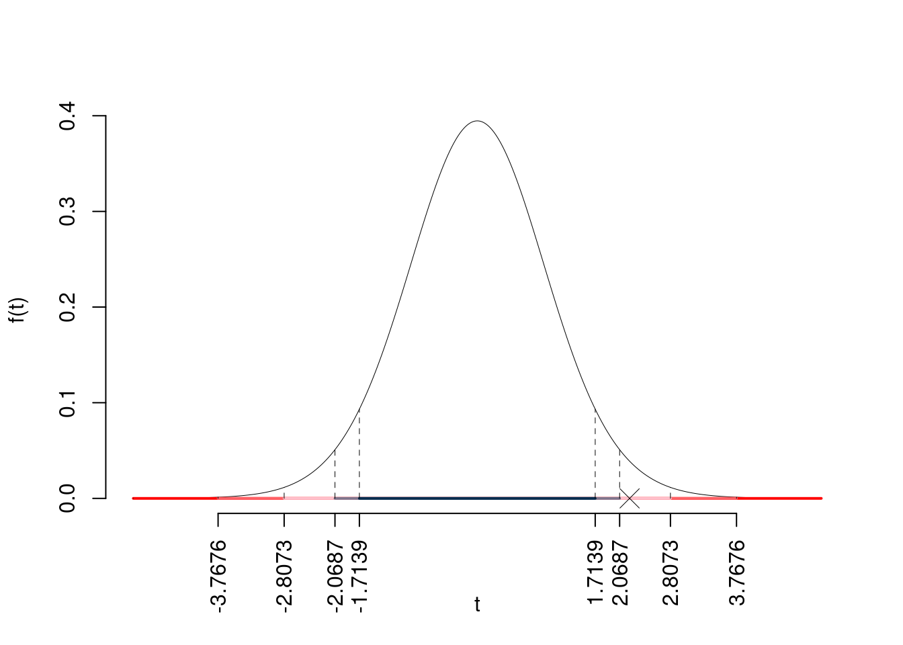
Il \(p_{\text{value}}\) è
\[ p_{\text{value}} = P(|T_{25-2}|>|2.21|)=2P(T_{25-2}>2.21)=0.037032 \]
Attenzione il calcolo del \(p_\text{value}\) con la \(T\) è puramente illustrativo e non può essere riprodotto senza una calcolatrice statistica adeguata.\[ 0.01 < p_\text{value}= 0.037032 \leq 0.05 \]
Prova di Statistica 2024/06/21-2
Esercizio 1
Su un campione di \(160\) famiglie dell’Emilia-Romagna sono stati rilevati i consumi annui in beni tecnologici (dai espressi in migliaia di euro). Qui di seguito la distribuzione delle frequenze relative:
| \([\text{x}_j,\) | \(\text{x}_{j+1})\) | \(f_j\) |
|---|---|---|
| 0.0 | 1.5 | 0.1062 |
| 1.5 | 3.0 | 0.3438 |
| 3.0 | 5.0 | 0.3812 |
| 5.0 | 20.0 | 0.1688 |
| 1.0000 |
1.a (Punti 14/105 \(\rightarrow\) 4.13/31) Individuare l’intervallo modale.
| \([\text{x}_j,\) | \(\text{x}_{j+1})\) | \(n_j\) | \(f_j\) | \(b_j\) | \(h_j\) |
|---|---|---|---|---|---|
| 0.0 | 1.5 | 17 | 0.1062 | 1.5 | 7.083 |
| 1.5 | 3.0 | 55 | 0.3438 | 1.5 | 22.917 |
| 3.0 | 5.0 | 61 | 0.3812 | 2.0 | 19.062 |
| 5.0 | 20.0 | 27 | 0.1688 | 15.0 | 1.125 |
| 160 | 1.0000 | 20.0 |
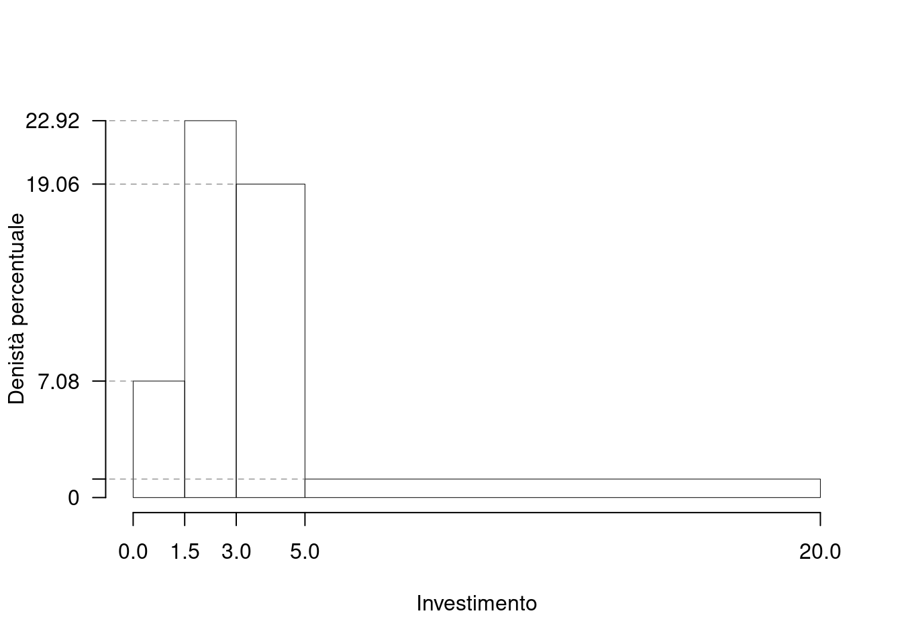
1.b (Punti 3/105 \(\rightarrow\) 0.89/31) Quante famiglie spendono più del 25-esimo percentile \(x_{0.25}\)?
\[\begin{eqnarray*} \%(X> 2.127 ) &=& ( 3 - 2.127 )\times h_{ 2 }+ f_{ 3 }\times 100+f_{ 4 }\times 100 \\ &=& ( 0.8727 )\times 22.92 + ( 0.3812 )\times 100+( 0.1688 )\times 100 \\ &=& 0.75 \times(100)\\ \#(X> 2.127 ) &\approx& 120 \end{eqnarray*}\]
1.c (Punti 2/105 \(\rightarrow\) 0.59/31) La media è pari a \(\bar x=4.49\), senza disegnare l’istogramma, che forma distributiva dobbiamo aspettarci?
1.d (Punti 2/105 \(\rightarrow\) 0.59/31) La spesa media della regione Emilia-Romagna, calcolata su 160 famiglie è pari \(\bar x_{ER}=4.4875\), quella della Lombardia, calcolata su 180 famiglie è pari \(\bar x_{L}=4.5582\), mentre quella del Veneto, calcolata su 150 famiglie è pari \(\bar x_{V}=3.7927\). Qual è la spesa media complessiva delle tre regioni?
Per trovare la spesa media delle tre regioni aggregate, dobbiamo considerare sia le medie delle singole regioni sia il numero di famiglie su cui sono state calcolate. La formula per la media aggregata \(\bar{x}_{agg}\) è:
\[\begin{eqnarray*} \bar{x}_{agg} &=& \frac{n_{ER} \bar{x}_{ER} + n_{L} \bar{x}_{L} + n_{V} \bar{x}_{V}}{n_{ER} + n_{L} + n_{V}}\\ &=& \frac{160\cdot4.4875+180\cdot4.5582+150\cdot3.7927}{160+180+150}\\ &=& 4.3008 \end{eqnarray*}\]
Dove:
- \(n_{ER}\) è il numero di famiglie in Emilia-Romagna
- \(n_{L}\) è il numero di famiglie in Lombardia
- \(n_{V}\) è il numero di famiglie in Veneto
- \(\bar{x}_{ER}\), \(\bar{x}_{L}\), \(\bar{x}_{V}\) sono le spese medie delle rispettive regioni
Esercizio 2
2.a (Punti 14/105 \(\rightarrow\) 4.13/31) Sia \(X\) il numero di telefonate in arrivo ad un centralino di emergenza, si assume \(X\sim\text{Pois}(1.2)\). Calcolare la probabilità che \(X\geq 2\).
\[\begin{eqnarray*} P( X \geq 2 ) &=& 1-P( X < 2 ) \\ &=& 1-\left( \frac{ 1.2 ^{ 0 }}{ 0 !}e^{- 1.2 }+\frac{ 1.2 ^{ 1 }}{ 1 !}e^{- 1.2 } \right)\\ &=& 1-( 0.3012+0.3614 )\\ &=& 1- 0.6626 \\ &=& 0.3374 \end{eqnarray*}\]
2.b (Punti 3/105 \(\rightarrow\) 0.89/31) Siano \(X\sim\text{Pois}(1.2)\) e \(Y\sim\text{Binom}(n=2,\pi=0.5)\), \(X\) e \(Y\) indipendenti, posto \(A=\{X\geq 2\}\), \(B=\{Y=0\}\), calcolare \(P(A\cup B)\).
\[\begin{eqnarray*} P(A) &=& 0.3374\\ P(B) &=& 0.5^2 = 0.25 \end{eqnarray*}\]
\[\begin{eqnarray} P( A \cup B ) &=& P( A )+P( B )-P( A \cap B ) \\ &=& P( A )+P( B )-P( A )\cdot ( B ) \\ &=& 0.3374 + 0.25 - 0.3374 \times 0.25 \\ &=& 0.503 \end{eqnarray}\]
2.c (Punti 2/105 \(\rightarrow\) 0.59/31) Se \(A\) e \(B\) sono due eventi diversi da \(\emptyset\), se \(P(A|B)=0\) in che relazione sono \(A\) e \(B\)?
2.d (Punti 2/105 \(\rightarrow\) 0.59/31) Sia \(X\) una variabile casuale con supporto \(S_X=c\{-1,0,2\}\) e con funzione di probabilità \[ f(x)=\begin{cases} \frac 25, &\text{ se $x=-1$}\\ \frac 25, &\text{ se $x=\phantom{-} 0$}\\ \frac 15, &\text{ se $x=\phantom{-} 2$}\\ \end{cases} \] Disegnare le sua funzione di ripartizione, \(F(x)\), nell’intervallo \(-2\leq x\leq 3\).
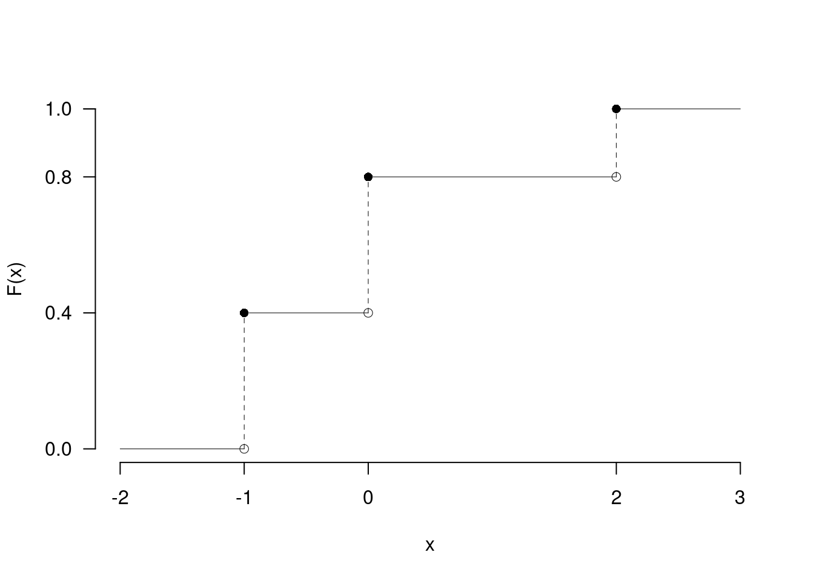
Esercizio 3
3.a (Punti 14/105 \(\rightarrow\) 4.13/31) Un’urna 4 premi da \(\mbox{0}\) euro, 1 premio da \(\mbox{2}\) euro. Si estrae 50 volte con reintroduzione. Qual è la probabilità che la proporzione di premi da 2 euro sia compresa tra 0.20 e 0.23.
\[\begin{eqnarray*} \mu &=& E(X_i) = \sum_{x\in S_X}x P(X=x)\\ &=& 0 \frac { 4 }{ 9 }+ 1 \frac { 3 }{ 9 }+ 2 \frac { 2 }{ 9 } \\ &=& 0.7778 \\ \sigma^2 &=& V(X_i) = \sum_{x\in S_X}x^2 P(X=x)-\mu^2\\ &=&\left( 0 ^2\frac { 4 }{ 9 }+ 1 ^2\frac { 3 }{ 9 }+ 2 ^2\frac { 2 }{ 9 } \right)-( 0.7778 )^2\\ &=& 0.6173 \end{eqnarray*}\] Teorema del Limite Centrale (proporzione)
Siano \(X_1\),…,\(X_n\), \(n=50\) VC IID, tc \(X_i\sim\text{Ber}(\pi=0.2)\)\(,\forall i\), posto: \[ \hat\pi=\frac{S_n}n = \frac{X_1 + ... + X_n}n \] allora:\[\begin{eqnarray*} \hat\pi & \mathop{\sim}\limits_{a}& N(\pi,\pi(1-\pi)/n) \\ &\sim & N\left(0.2,\frac{0.2\cdot(1-0.2)}{50}\right) \\ &\sim & N(0.2,0.0032) \end{eqnarray*}\]\[\begin{eqnarray*} P( 0.2 < \hat\pi \leq 0.23 ) &=& P\left( \frac { 0.2 - 0.2 }{\sqrt{ 0.0032 }} < \frac { \hat\pi - \pi }{ \sqrt{\pi(1-\pi)/n} } \leq \frac { 0.23 - 0.2 }{\sqrt{ 0.0032 }}\right) \\ &=& P\left( 0 < Z \leq 0.53 \right) \\ &=& \Phi( 0.53 )-\Phi( 0 )\\ &=& 0.7019 - 0.5 \\ &=& 0.2019 \end{eqnarray*}\]
Esercizio 4
4.a (Punti 3/105 \(\rightarrow\) 0.89/31) (Punti 3) Si consideri il modello di Bernoulli \(X\sim\text{Ber}(\pi)\). Sia \(\hat\pi\) lo stimatore di massima verosimiglianza per \(\pi\)
\[ \hat\pi = \frac 1n \sum_{i=1}^n X_i \]
Ricavare il suo Standard Error teorico e quello stimato.
4.b (Punti 3/105 \(\rightarrow\) 0.89/31) Cosa significa che lo stimatore di massima verosimiglianza è invariante alle trasformazioni monotone invertibili?
4.c (Punti 3/105 \(\rightarrow\) 0.89/31) Siano \(T_1\) e \(T_2\) due test per lo stesso sistema di ipotesi con la stessa significatività \(\alpha\), sia \(\beta_1=0.23\) la probabilità di errore di secondo tipo del test \(T_1\) e \(\beta_2=0.18\) la probabilità di errore di secondo tipo del test \(T_2\). Quale dei due test è più potente?
4.d (Punti 3/105 \(\rightarrow\) 0.89/31) In un’indagine sull’opinione sul reddito di inclusione sono stati intervistate 150 persone che vivono al nord e 180 che vivono al sud: 60 su 150 che vivono al nord sono favorevoli al reddito di cittadinanza mentre 95 su 180 che vivono al sud sono favorevoli. Messo a test
\[ \begin{cases} H_0: \pi_\text{N} = \pi_\text{S} \\ H_1: \pi_\text{N} \neq \pi_\text{S} \end{cases} \]
è risultato \(p_{\text{value}} =0.0206\). Cosa possiamo concludere?
Esercizio 5
In uno studio sul reddito, in un campione di \(n=50\) individui, sono stati analizzati il livello di istruzione (in anni di studio, \(X\)) e la propensione a credere in teorie del complotto (in opportuna scala, \(Y\)).
Si osservano le seguenti statistiche: \(\sum_{i=1}^{50}x_i=708\), \(\sum_{i=1}^{50}y_i=278\), \(\sum_{i=1}^{50}x_i^2=10786\), \(\sum_{i=1}^{50}y_i^2=2017\) e \(\sum_{i=1}^{50}x_iy_i=3365\).
5.a (Punti 14/105 \(\rightarrow\) 4.13/31) Si è osservato \(x_3=10\) e \(y_3=8.2031\), stimare il modello di regressione dove \(Y\) viene spiegata da \(X\) e calcolare il residuo per il punto \(i=3\).
\[\begin{eqnarray*} \bar x &=&\frac 1 n\sum_{i=1}^n x_i = \frac {1}{ 50 } 708 = 14.16 \\ \bar y &=&\frac 1 n\sum_{i=1}^n y_i = \frac {1}{ 50 } 278 = 5.56 \\ \hat\sigma_X^2&=&\frac 1 n\sum_{i=1}^n x_i^2-\bar x^2=\frac {1}{ 50 } 10786 - 14.16 ^2= 15.21 \\ \hat\sigma_Y^2&=&\frac 1 n\sum_{i=1}^n y_i^2-\bar y^2=\frac {1}{ 50 } 2017 - 5.56 ^2= 9.426 \\ \text{cov}(X,Y)&=&\frac 1 n\sum_{i=1}^n x_i~y_i-\bar x\bar y=\frac {1}{ 50 } 3365 - 14.16 \cdot 5.56 = -11.42 \\ \hat\beta_1 &=& \frac{\text{cov}(X,Y)}{\hat\sigma_X^2} \\ &=& \frac{ -11.42 }{ 15.21 } = -0.7507 \\ \hat\beta_0 &=& \bar y - \hat\beta_1 \bar x\\ &=& 5.56 - (-0.7507) \times 14.16 = 16.19 \end{eqnarray*}\]\[\begin{eqnarray*} \hat y_i &=&\hat\beta_0+\hat\beta_1 x_i=\\ &=& 16.19 + (-0.7507) \times 10 = 8.683 \\ \hat \varepsilon_i &=& y_i-\hat y_i\\ &=& 8.203 - 8.683 = -0.4799 \end{eqnarray*}\]
5.b (Punti 3/105 \(\rightarrow\) 0.89/31) Il modello si adatta bene ai dati?
\[\begin{eqnarray*} r&=&\frac{\text{cov}(X,Y)}{\sigma_X\sigma_Y}=\frac{ -11.42 }{ 3.901 \times 3.07 }= -0.9537 \\r^2&=& 0.9096 > 0.75 \end{eqnarray*}\] Il modello si adatta bene ai dati.
5.c (Punti 2/105 \(\rightarrow\) 0.59/31) Interpretare il diagramma dei residui.
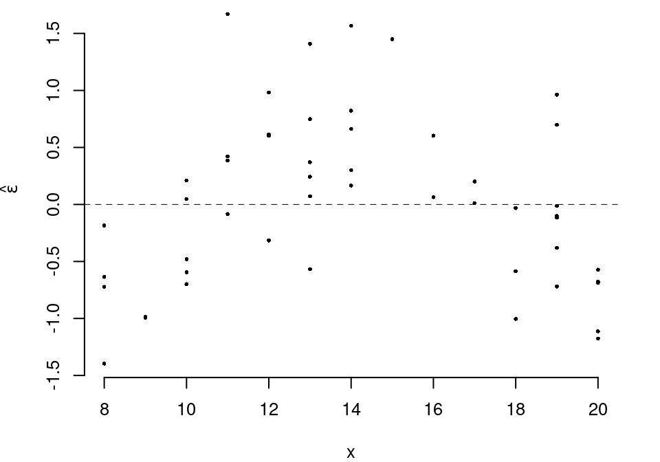
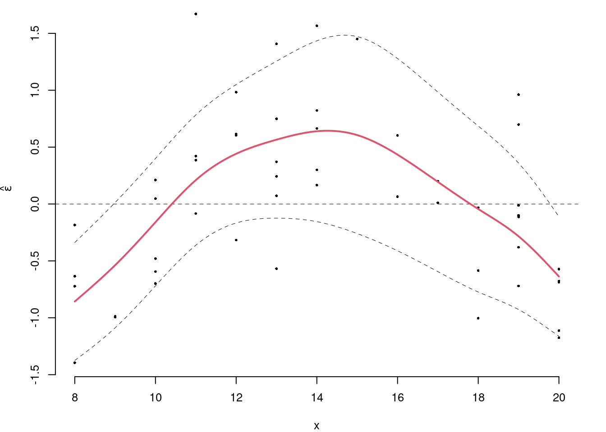
5.d (Punti 2/105 \(\rightarrow\) 0.59/31) Se in un modello di regressione \(r^2=1\) cosa significa?
5.e (Punti 2/105 \(\rightarrow\) 0.59/31) Se in un modello di regressione \(r<0\) che segno avrà \(\hat\beta_1\)? Perché?
5.f (Punti 14/105 \(\rightarrow\) 4.13/31) Testare l’ipotesi che \(\beta_0\) sia uguale a 16.4, contro l’alternativa che sia minore per \(\alpha=0.1,0.05,0.01,0.001\) e dare una valutazione approssimativa del \(p_\text{value}\) (ad esempio il \(p_\text{value}\) è minore di 0.001, compreso tra 0.05 e tra 0.01, ecc.).
\(\fbox{A}\) FORMULAZIONE DELLE IPOTESI
\[\begin{cases} H_0: \beta_0 = \beta_{0;H_0}=16.4 \\ H_1: \beta_0 < \beta_{0;H_0}=16.4 \end{cases}\]
\(\fbox{B}\) SCELTA E CALCOLO STATISTICA-TEST, \(T\) Test su un coefficiente di regressione: \(\Rightarrow\) t-Test.
\[\begin{eqnarray*} \hat{\sigma_\varepsilon}^2&=&(1-r^2)\hat\sigma_Y^2\\ &=& (1- 0.9095 )\times 9.426 \\ &=& 0.8519 \\ S_\varepsilon^2 &=& \frac{n} {n-2} \hat{\sigma_\varepsilon}^2\\ &=& \frac{ 50 } { 50 -2} \hat{\sigma_\varepsilon}^2 \\ &=& \frac{ 50 } { 50 -2} \times 0.8519 = 0.8874 \end{eqnarray*}\]
E quindi\[\begin{eqnarray*}
V(\hat\beta_{0}) &=& \sigma_{\varepsilon}^{2} \left( \frac{1} {n} + \frac{\bar{x}^{2}} {n \hat{\sigma}^{2}_{X}} \right)\\
\widehat{V(\hat\beta_{0})} &=& S_{\varepsilon}^{2}\left( \frac{1} {n} + \frac{\bar{x}^{2}} {n \hat{\sigma}^{2}_{X}} \right)\ \\
&=& 0.8874 \times\left( \frac{1} { 50 } + \frac{ 14.16 ^{2}} { 50 \times 15.21 } \right)\\
\widehat{SE(\hat\beta_{0})} &=& \sqrt{ 0.2516 }\\
&=& 0.5016
\end{eqnarray*}\]
\[\begin{eqnarray*}
\frac{\hat\beta_{ 0 } - \beta_{ 0 ;H_0}} {\widehat{SE(\hat\beta_{ 0 })}}&\sim&t_{n-2}\\
t_{\text{obs}}
&=& \frac{ ( 16.19 - 16.4 )} { 0.5016 }
= -0.4182 \, .
\end{eqnarray*}\]
\(\fbox{C}\) CONCLUSIONE
Consideriamo \(\alpha=0.1, 0.05, 0.01, 0.001\)
I valori critici sono
\(t_{50-2;0.1}=-1.2994\); \(t_{50-2;0.05}=-1.6772\); \(t_{50-2;0.01}=-2.4066\); \(t_{50-2;0.001}=-3.2689\)
Siccome \(t_\text{obs}=-0.4182>t_{50-2;0.1}=-1.2994\), quindi non rifiuto \(H_0\) a nessun livello di significatività,
\(p_\text{value}>0.1\), non significativo
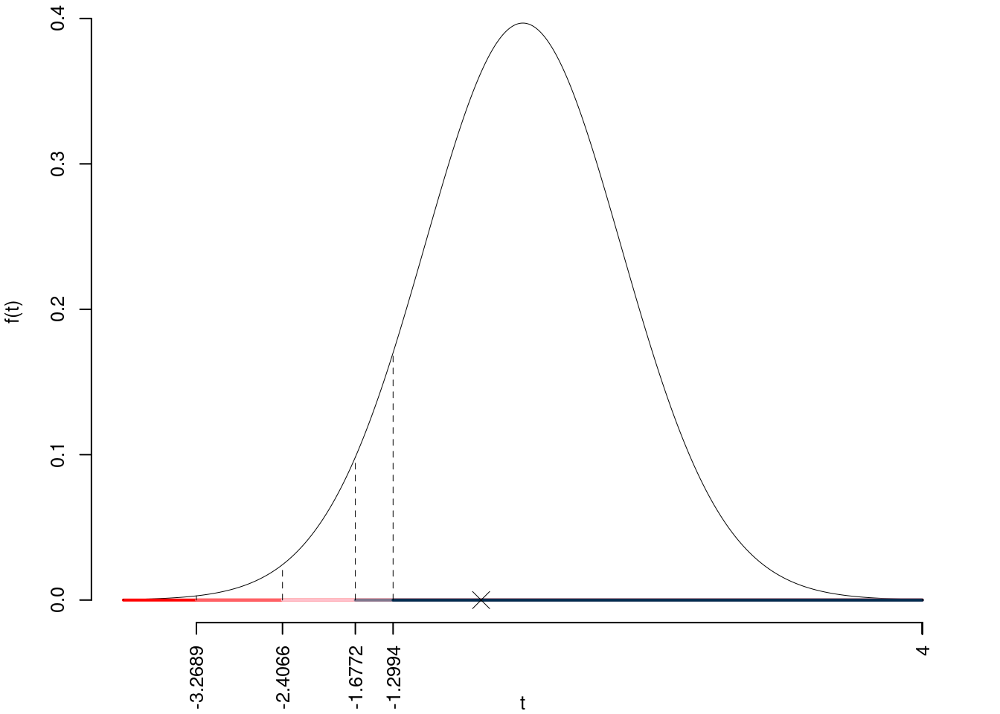
Il \(p_{\text{value}}\) è
\[ p_{\text{value}} = P(T_{50-2}<-0.42)=0.338817 \]
Attenzione il calcolo del \(p_\text{value}\) con la \(T\) è puramente illustrativo e non può essere riprodotto senza una calcolatrice statistica adeguata.\[ 0.1 < p_\text{value}= 0.338817 \leq 1 \]
Prova di Statistica 2024/06/21-3
Esercizio 1
Su un campione di \(160\) famiglie dell’Emilia-Romagna sono stati rilevati i consumi annui in beni tecnologici (dai espressi in migliaia di euro). Qui di seguito la distribuzione delle densità percentuali:
| \([\text{x}_j,\) | \(\text{x}_{j+1})\) | \(h_j\) |
|---|---|---|
| 0.0 | 1.5 | 12.0833 |
| 1.5 | 3.0 | 23.7500 |
| 3.0 | 8.0 | 7.8750 |
| 8.0 | 20.0 | 0.5729 |
1.a (Punti 14/105 \(\rightarrow\) 4.13/31) Calcolare il valore approssimativo della mediana.
\[\begin{eqnarray*} p &=& 0.5 , \text{essendo }F_{ 2 }= 0.5375 > 0.5 \Rightarrow j_{ 0.5 }= 2 \\ x_{ 0.5 } &=& x_{\text{inf}; 2 } + \frac{ { 0.5 } - F_{ 1 }} {f_{ 2 }} \cdot b_{ 2 } \\ &=& 1.5 + \frac {{ 0.5 } - 0.1812 } { 0.3563 } \cdot 1.5 \\ &=& 2.842 \end{eqnarray*}\] 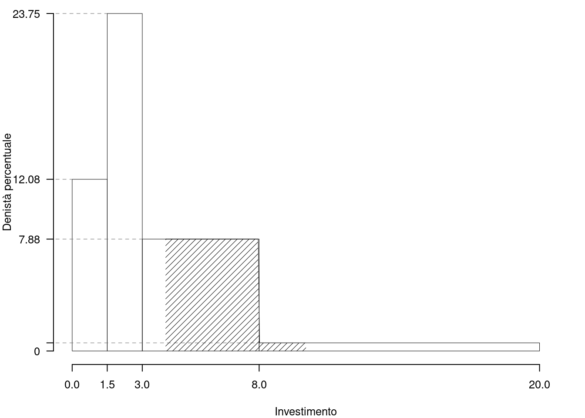
1.b (Punti 3/105 \(\rightarrow\) 0.89/31) Qual è la percentuale di famiglie spendono più del 55-esimo percentile \(x_{0.55}\)?
\[\begin{eqnarray*} \%(X> 3.159 ) &=& ( 8 - 3.159 )\times h_{ 3 }+ f_{ 4 }\times 100 \\ &=& ( 4.841 )\times 7.875 + ( 0.0688 )\times 100 \\ &=& 0.45 \times(100)\\ \#(X> 3.159 ) &\approx& 72 \end{eqnarray*}\]
1.c (Punti 2/105 \(\rightarrow\) 0.59/31) La media è pari a \(\bar x=4\), senza disegnare l’istogramma, che forma distributiva dobbiamo aspettarci?
1.d (Punti 2/105 \(\rightarrow\) 0.59/31) La spesa media è pari a \(4.0009\), mentre la varianza è pari a \(10.6517\). Se ogni famiglia diminuisse la propria spesa del 2%, quanto varrebbero la media e la varianza dei dati così trasformati?
\[ \bar y = 3.9209\qquad \sigma^2 = 10.2299 \]
Esercizio 2
2.a (Punti 14/105 \(\rightarrow\) 4.13/31) Sia \(X\sim N(6,0.5)\) e sia \(Y\sim N(6,0.5)\), \(X\) e \(Y\) indipendenti sia \(A=\{X>5\}\) e \(B=\{Y<7\}\). Calcolare \(P(A\cup B)\).
\[\begin{eqnarray*} P( X > 5 ) &=& P\left( \frac { X - \mu }{ \sigma } > \frac { 5 - 6 }{\sqrt{ 0.5 }} \right) \\ &=& P\left( Z > -1.41 \right) \\ &=& 1-P(Z< -1.41 )\\ &=& 1-(1-\Phi( 1.41 )) \\ &=& 0.9207 \end{eqnarray*}\]\[\begin{eqnarray*} P( Y < 7 ) &=& P\left( \frac { Y - \mu }{ \sigma } < \frac { 7 - 6 }{\sqrt{ 0.5 }} \right) \\ &=& P\left( Z < 1.41 \right) \\ &=& \Phi( 1.41 ) \\ &=& 0.9207 \end{eqnarray*}\]\[\begin{eqnarray} P( A \cup B ) &=& P( A )+P( B )-P( A \cap B ) \\ &=& P( A )+P( B )-P( A )\cdot ( B ) \\ &=& 0.9207 + 0.9207 - 0.9207 \times 0.9207 \\ &=& 0.9937 \end{eqnarray}\]
2.b (Punti 3/105 \(\rightarrow\) 0.89/31) , posto \(W=X-Y\), calcolare \(P(W<1|W>-1)\).
\[ P(W<1|W>-1)=\frac{P(-1<W<1)}{P(W>-1)}=\frac{0.6827}{0.8413}=0.8114 \]
2.c (Punti 2/105 \(\rightarrow\) 0.59/31) Se \(P(A)=0.4\) e \(P(B)=0.7\), è possibile che \(A\cap B=\emptyset\)? Perché?
No perché se fosse \(A\cap B=\emptyset\), allora \[\begin{eqnarray*} P(A \cup B) &=& P(A) + P(B) - P(A\cap B)\\ &=& P(A) + P(B) - P(\emptyset)\\ &=& P(A) + P(B) - 0 \\ &=& 0.4 + 0.7\\ &=& 1.3 > 1 \qquad\text{impossibile} \end{eqnarray*}\]
2.d (Punti 2/105 \(\rightarrow\) 0.59/31) Sia \(X\sim\text{Binom}(n=2,\pi=0.5)\) e sia \(F\) la sua funzione di ripartizione. Disegnare \(F(x)\) nell’intervallo \(-1\leq x\leq 3\)
\[\begin{eqnarray*} P( X \leq 0 ) &=& \binom{ 2 }{ 0 } 0.5 ^{ 0 }(1- 0.5 )^{ 2 - 0 } \\ &=& 0.25 \\ &=& 0.25 \end{eqnarray*}\] \[\begin{eqnarray*} P( X \leq 1 ) &=& \binom{ 2 }{ 0 } 0.5 ^{ 0 }(1- 0.5 )^{ 2 - 0 }+\binom{ 2 }{ 1 } 0.5 ^{ 1 }(1- 0.5 )^{ 2 - 1 } \\ &=& 0.25+0.5 \\ &=& 0.75 \end{eqnarray*}\] \[\begin{eqnarray*} P( X \leq 2 ) &=& \binom{ 2 }{ 0 } 0.5 ^{ 0 }(1- 0.5 )^{ 2 - 0 }+\binom{ 2 }{ 1 } 0.5 ^{ 1 }(1- 0.5 )^{ 2 - 1 }+\binom{ 2 }{ 2 } 0.5 ^{ 2 }(1- 0.5 )^{ 2 - 2 } \\ &=& 0.25+0.5+0.25 \\ &=& 1 \end{eqnarray*}\] 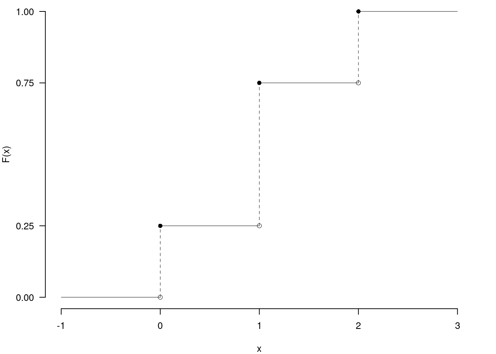
Esercizio 3
3.a (Punti 14/105 \(\rightarrow\) 4.13/31) Un’urna 3 premi da \(\mbox{0}\) euro, un premio da \(\mbox{1}\) euro. Si estrae 100 volte con reintroduzione.
Qual è la probabilità che la la vincita totale sia maggiore di 30?
Teorema del Limite Centrale (somma di Bernoulli)
Siano \(X_1\),…,\(X_n\), \(n=100\) VC IID, tc \(X_i\sim\text{Ber}(\pi=0.25)\)\(,\forall i\), posto: \[ S_n = X_1 + ... + X_n \] allora:\[\begin{eqnarray*} S_n & \mathop{\sim}\limits_{a}& N(n\pi,n\pi(1-\pi)) \\ &\sim & N(100\cdot0.25,100\cdot0.25\cdot(1-0.25)) \\ &\sim & N(25,18.75) \end{eqnarray*}\]\[\begin{eqnarray*} P( S_n > 30 ) &=& P\left( \frac { S_n - n\pi }{ \sqrt{n\pi(1-\pi)} } > \frac { 30 - 25 }{\sqrt{ 18.75 }} \right) \\ &=& P\left( Z > 1.15 \right) \\ &=& 1-P(Z< 1.15 )\\ &=& 1-\Phi( 1.15 ) \\ &=& 0.1251 \end{eqnarray*}\]
Esercizio 4
4.a (Punti 3/105 \(\rightarrow\) 0.89/31) (Punti 3) Si consideri il modello binomiale \(X\sim\text{Pois}(\lambda)\). Sia \(\hat\lambda\) lo stimatore di massima verosimiglianza per \(\mu\)
\[ \hat\lambda = \frac 1n \sum_{i=1}^n X_i \]
Ricavare il suo Standard Error teorico e quello stimato.
4.b (Punti 3/105 \(\rightarrow\) 0.89/31) Che differenza c’è tra lo Standard Error di uno stimatore e la Deviazione Standard di popolazione?
4.c (Punti 3/105 \(\rightarrow\) 0.89/31) Definire gli errori di primo e di secondo tipo e le relative probabilità.
4.d (Punti 3/105 \(\rightarrow\) 0.89/31) Un economista sta studiando il numero di piccole imprese che aprono ogni mese in una certa regione. Ha raccolto dati sul numero di nuove imprese in 57 mesi. I dati osservati sono riportati nella tabella seguente. L’obiettivo è determinare se i dati seguono una distribuzione di Poisson.
| Numero | 0.0 | 1.00 | 2.00 | 3.00 | 4.00 | 5.00 | 6.00 |
| Osservati | 13.0 | 5.00 | 10.00 | 10.00 | 8.00 | 7.00 | 4.00 |
| Attesi | 4.4 | 11.27 | 14.43 | 12.32 | 7.89 | 4.04 | 1.73 |
Eseguito il test del \(\chi^2\) per verificare la conformità dei dati alla distribuzione di Poisson, il biologo ottiene un \(p_\text{value}=0.0001573\). Il modello Poisson è adeguato?
Esercizio 5
5.a (Punti 14/105 \(\rightarrow\) 4.13/31) In un’indagine sui consumi in beni alimentari sono stati intervistati 13 nuclei familiari al Nord d’Italia e 15 al Sud. Per le \(n_N=18\) famiglie del nord si è osservato un consumo medio pari a \(\mu_N=1.8\) mila euro con una deviazione standard pari a \(\hat\sigma_N=1.1\) mila euro, mentre per le \(n_S=21\) famiglie del sud si è osservato un consumo medio pari a \(\mu_S=0.8\) mila euro con una deviazione standard pari a \(\hat\sigma_S=0.9\) mila euro.
Sotto ipotesi di omogeneità, testare l’ipotesi che il consumo medio sia uguale tra nord e sud, contro l’alternativa che sia maggiore al nord, per \(\alpha=0.1,0.05,0.01,0.001\) e dare una valutazione approssimativa del \(p_\text{value}\) (ad esempio il \(p_\text{value}\) è minore di 0.001, compreso tra 0.05 e tra 0.01, ecc.).
Test \(T\) per due medie, (omogeneità)
\(\fbox{A}\) FORMULAZIONE DELLE IPOTESI
\[\begin{cases} H_0: \mu_\text{$N$} = \mu_\text{$S$} \\ H_1: \mu_\text{$N$} > \mu_\text{$S$} \end{cases}\]
\(\fbox{B}\) SCELTA E CALCOLO STATISTICA-TEST, \(T\)
L’ipotesi è di omogeneità e quindi calcoliamo:\[ S_p^2=\frac{n_\text{ $N$ }\hat\sigma^2_\text{ $N$ }+n_\text{ $S$ }\hat\sigma^2_\text{ $S$ }}{n_\text{ $N$ }+n_\text{ $S$ }-2} = \frac{ 18 \cdot 1.1 ^2+ 21 \cdot 0.9 ^2}{ 18 + 21 -2}= 1.048 \]
\[\begin{eqnarray*} \frac{\hat\mu_\text{ $N$ } - \hat\mu_\text{ $S$ }} {\sqrt{\frac {S^2_p}{n_\text{ $N$ }}+\frac {S^2_p}{n_\text{ $S$ }}}}&\sim&t_{n_\text{ $N$ }+n_\text{ $S$ }-2}\\ t_{\text{obs}} &=& \frac{ ( 1.8 - 0.8 )} {\sqrt{\frac{ 1.281 }{ 18 }+\frac{ 0.8505 }{ 21 }}} = 3.041 \, . \end{eqnarray*}\]
\(\fbox{C}\) CONCLUSIONE
Consideriamo \(\alpha=0.1, 0.05, 0.01, 0.001\)
I valori critici sono
\(t_{39-2;0.1}=1.3049\); \(t_{39-2;0.05}=1.6871\); \(t_{39-2;0.01}=2.4314\); \(t_{39-2;0.001}=3.3256\)
Siccome \(2.4314<t_\text{obs}=3.0406<3.3256\), quindi rifiuto \(H_0\) all’1%,
\(0.001<p_\text{value}<0.01\), molto significativo \(\fbox{**}\).
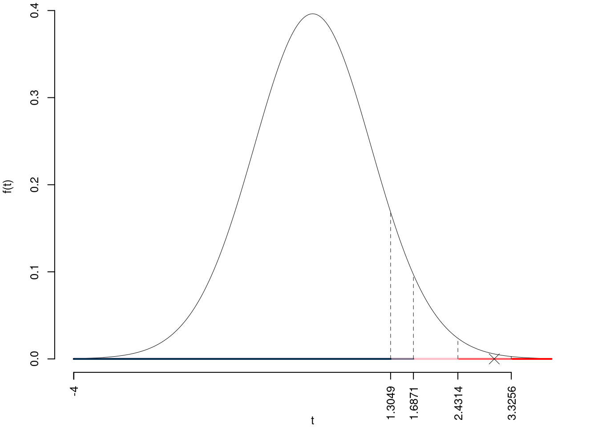
Il \(p_{\text{value}}\) è
\[ p_{\text{value}} = P(T_{39-2}>3.04)=0.002161 \]
Attenzione il calcolo del \(p_\text{value}\) con la \(T\) è puramente illustrativo e non può essere riprodotto senza una calcolatrice statistica adeguata.\[ 0.001 < p_\text{value}= 0.002161 \leq 0.01 \]
Esercizio 6
In uno studio sull’uso delle nuove tecnologie, in un campione di \(n=50\) individui, sono stati analizzati il tempo passato sui social (in ore al giorno, \(X\)) e il numero di libri letti in un anno \(Y\). Si osservano le seguenti statistiche: \(\sum_{i=1}^{50}x_i=204\), \(\sum_{i=1}^{50}y_i=260\), \(\sum_{i=1}^{50}x_i^2=1150\), \(\sum_{i=1}^{50}y_i^2=1733\) e \(\sum_{i=1}^{50}x_iy_i=738\).
6.a (Punti 14/105 \(\rightarrow\) 4.13/31) Si è osservato \(x_3=1.66\) e \(y_3=7.0072\), stimare il modello di regressione dove \(Y\) viene spiegata da \(X\) e calcolare il residuo per il punto \(i=3\).
\[\begin{eqnarray*} \bar x &=&\frac 1 n\sum_{i=1}^n x_i = \frac {1}{ 50 } 204 = 4.08 \\ \bar y &=&\frac 1 n\sum_{i=1}^n y_i = \frac {1}{ 50 } 260 = 5.2 \\ \hat\sigma_X^2&=&\frac 1 n\sum_{i=1}^n x_i^2-\bar x^2=\frac {1}{ 50 } 1150 - 4.08 ^2= 6.354 \\ \hat\sigma_Y^2&=&\frac 1 n\sum_{i=1}^n y_i^2-\bar y^2=\frac {1}{ 50 } 1733 - 5.2 ^2= 7.62 \\ \text{cov}(X,Y)&=&\frac 1 n\sum_{i=1}^n x_i~y_i-\bar x\bar y=\frac {1}{ 50 } 738 - 4.08 \cdot 5.2 = -6.449 \\ \hat\beta_1 &=& \frac{\text{cov}(X,Y)}{\hat\sigma_X^2} \\ &=& \frac{ -6.449 }{ 6.354 } = -1.015 \\ \hat\beta_0 &=& \bar y - \hat\beta_1 \bar x\\ &=& 5.2 - (-1.0151) \times 4.08 = 9.341 \end{eqnarray*}\]\[\begin{eqnarray*} \hat y_i &=&\hat\beta_0+\hat\beta_1 x_i=\\ &=& 9.341 + (-1.0151) \times 1.66 = 7.656 \\ \hat \varepsilon_i &=& y_i-\hat y_i\\ &=& 7.007 - 7.656 = -0.6492 \end{eqnarray*}\]
6.b (Punti 3/105 \(\rightarrow\) 0.89/31) Dare un’interpretazione dei parametri di regressione stimati.
6.c (Punti 2/105 \(\rightarrow\) 0.59/31) Definire i punti di leva e indicare una misura per misurarli.
6.d (Punti 2/105 \(\rightarrow\) 0.59/31) Se in un modello di regressione \(r^2=0\) cosa significa?
6.e (Punti 2/105 \(\rightarrow\) 0.59/31) Se in un modello di regressione \(r=0.55\), \(\hat\sigma_Y=0.9\) e \(\hat\beta_1=1.5\), calcolare \(\hat\alpha_1\), la stima del coefficiente angolare del modello
\[ X_i = \alpha_0+\alpha_1 Y_i + \delta_i, \qquad E(\delta_i)=0; V(\delta_i)=\sigma_\delta^2 \]
dove la \(X\) è spiegata dalla \(Y\).
Prova di Statistica 24/07/06 -1
Esercizio 1
Su un campione di \(150\) di piccole e medie imprese dell’Emilia-Romagna sono stati rilevati gli investimenti in infrastrutture tecnologiche (dati espressi in migliaia di euro). Qui di seguito la distribuzione delle frequenze cumulate:
| \([\text{x}_j,\) | \(\text{x}_{j+1})\) | \(F_j\) |
|---|---|---|
| 0 | 2 | 0.2 |
| 2 | 4 | 0.6 |
| 4 | 8 | 0.8 |
| 8 | 16 | 1.0 |
1.a (Punti 14/105 \(\rightarrow\) 4.13/31) Disegnare l’istogramma di densità percentuale.
| \([\text{x}_j,\) | \(\text{x}_{j+1})\) | \(n_j\) | \(f_j\) | \(b_j\) | \(h_j\) |
|---|---|---|---|---|---|
| 0 | 2 | 30 | 0.2 | 2 | 10.0 |
| 2 | 4 | 60 | 0.4 | 2 | 20.0 |
| 4 | 8 | 30 | 0.2 | 4 | 5.0 |
| 8 | 16 | 30 | 0.2 | 8 | 2.5 |
| 150 | 1.0 | 16 |
1.b (Punti 3/105 \(\rightarrow\) 0.89/31) Quante imprese investono tra \(x_{0.15}\) il 15-esimo e \(x_{0.85}\) l’85-esimo percentile?
\[\begin{eqnarray*} \%(1.5<X<10) &=& (2-1.5)\times h_{1}+ f_{ 2 }\times 100+f_{ 3 }\times 100 + (10-8)\times h_{4} \\ &=& (0.5)\times 10+ ( 0.4 )\times 100+( 0.2 )\times 100 + (2)\times 2.5 \\ &=& 0.7 \times(100)\\ \#( 1.5 < X < 10 ) &\approx& 105 \end{eqnarray*}\]
1.c (Punti 2/105 \(\rightarrow\) 0.59/31) Che relazione dobbiamo aspettarci tra media, mediana e moda?
1.d (Punti 2/105 \(\rightarrow\) 0.59/31) Siano \(x_1,...,x_n\), \(n\) dati e \(\bar x=\frac 1n \sum_{i=1}^n x_i\) la loro media aritmetica. Quanto vale
\[ \sum_{i=1}^n (x_i-\bar x)=~~? \]
Esercizio 2
2.a (Punti 14/105 \(\rightarrow\) 4.13/31) Si consideri un’urna che ha una pallina bianche, due nere e due verdi. Si estrae 5 volte con reinserimento. Sia \(X\) la variabile casuale che conta il numero di bianche su 5 estrazioni. Calcolare la probabilità che \(X\leq 1\).
\[\begin{eqnarray*} P( X \leq 1 ) &=& \binom{ 5 }{ 0 } 0.2 ^{ 0 }(1- 0.2 )^{ 5 - 0 }+\binom{ 5 }{ 1 } 0.2 ^{ 1 }(1- 0.2 )^{ 5 - 1 } \\ &=& 0.3277+0.4096 \\ &=& 0.7373 \end{eqnarray*}\]
2.b (Punti 3/105 \(\rightarrow\) 0.89/31) Sia \(X\) la VC del punto precedente. Considerato \(A=\{X\leq 1\}\), \(B=\{X\leq 2\}\), calcolare \(P(A|B)\).
\[\begin{eqnarray*} P(B) &=& 0.9421\\ P(A\cap B) &=& P( \{X \leq 1\} \cap \{X \leq 2\})\\ &=& P( X \leq 1)\\ &=& 0.7373\\ P(A|B) &=& \frac{P(A\cap B)}{P(B)}\\ &=& \frac{0.7373}{0.9421}\\ &=& 0.7826 \end{eqnarray*}\]
2.c (Punti 2/105 \(\rightarrow\) 0.59/31) Se \(A\) e \(B\), sono due eventi tali che \(P(A)=0.2\), \(P(B)=0.6\), e \(P(A\cap B)=0.18\), \(A\) e \(B\) sono indipendenti? Perché?
2.d (Punti 2/105 \(\rightarrow\) 0.59/31) Sia \(X\) una variabile casuale con supporto \(S_X=c\{-1,+1\}\) e con funzione di probabilità \[ f(x)=\begin{cases} \frac 25, &\text{ se $x=-1$}\\ \frac 35, &\text{ se $x=+1$} \end{cases} \] Disegnare le sua funzione di ripartizione, \(F(x)\), nell’intervallo \(-2\leq x\leq 2\).
Esercizio 3
3.a (Punti 14/105 \(\rightarrow\) 4.13/31) Un’urna contiene 4 palline col numero \(\mbox{-1}\) e 6 col \(\mbox{1}\). Si estrae 100 volte con reintroduzione. Qual è la probabilità che la somma sia maggiore di 25?
\[\begin{eqnarray*} \mu &=& E(X_i) = \sum_{x\in S_X}x P(X=x)\\ &=& ( -1 ) \frac { 4 }{ 10 }+ 1 \frac { 6 }{ 10 } \\ &=& 0.2 \\ \sigma^2 &=& V(X_i) = \sum_{x\in S_X}x^2 P(X=x)-\mu^2\\ &=&\left( ( -1 ) ^2\frac { 4 }{ 10 }+ 1 ^2\frac { 6 }{ 10 } \right)-( 0.2 )^2\\ &=& 0.96 \end{eqnarray*}\] Teorema del Limite Centrale (somma VC qualunque)
Siano \(X_1\),…,\(X_n\), \(n=100\) VC IID, tc \(E(X_i)=\mu=0.2\) e \(V(X_i)=\sigma^2=0.96,\forall i\), posto: \[ S_n = X_1 + ... + X_n \] allora:\[\begin{eqnarray*} S_n & \mathop{\sim}\limits_{a}& N(n\mu,n\sigma^2) \\ &\sim & N(100\cdot0.2,100\cdot0.96) \\ &\sim & N(20,96) \end{eqnarray*}\]\[\begin{eqnarray*} P( S_n > 25 ) &=& P\left( \frac { S_n - n\mu }{ \sqrt{n\sigma^2} } > \frac { 25 - 20 }{\sqrt{ 96 }} \right) \\ &=& P\left( Z > 0.51 \right) \\ &=& 1-P(Z< 0.51 )\\ &=& 1-\Phi( 0.51 ) \\ &=& 0.305 \end{eqnarray*}\]
Esercizio 4
4.a (Punti 3/105 \(\rightarrow\) 0.89/31) Si consideri il modello normale \(X\sim N(\mu,\sigma^2)\). Sia \(\hat\mu\) lo stimatore di massima verosimiglianza per \(\mu\)
\[ \hat\mu = \frac 1n \sum_{i=1}^n X_i \]
Estratti \(n=25\) dati si è ottenuto \(\sum_{i=1}^n x_i = 45\) e \(\sum_{i=1}^n x_i^2 = 105\). Ricavare il suo Standard Error teorico e quello stimato.
\[\begin{eqnarray*} \hat\mu &=&\frac{45}{25}=1.68\\ \hat\sigma &=&\sqrt{\frac 1{25}105-1.68^2}=1.1737\\ S &=&\sqrt{\frac{n}{n-1}}\hat\sigma=1.1979\\ SE(\hat\mu) &=& \frac{\sigma}{\sqrt{n}}\\ \widehat{SE(\hat\mu)} &=& \frac{S}{\sqrt{n}}\\ \widehat{SE(\hat\mu)} &=& \frac{1.1979}{\sqrt{25}}=0.2396\\ \end{eqnarray*}\]
4.b (Punti 3/105 \(\rightarrow\) 0.89/31) Sia \(h\) uno stimatore per \(\theta\), cosa significa che \(h\) è consistente?
4.c (Punti 3/105 \(\rightarrow\) 0.89/31) Definire la significatività e la potenza di un test.
4.d (Punti 3/105 \(\rightarrow\) 0.89/31) Un responsabile delle risorse umane sta conducendo uno studio sull’associazione tra il tipo di formazione ricevuta e la performance lavorativa. Ha somministrato un questionario a 260 dipendenti, chiedendo loro di indicare la propria performance lavorativa (Alta, Media, Bassa) e il tipo di formazione ricevuta (Tecnica, Manageriale, Soft Skills). L’obiettivo è determinare se c’è un’associazione tra il tipo di formazione ricevuta e la performance lavorativa.
|
Performance Lavorativa
|
|||
|---|---|---|---|
| Alta | Media | Bassa | |
| Tipo di Formazione | |||
| Tecnica | 30 | 15 | 20 |
| Manageriale | 20 | 25 | 40 |
| Soft Skills | 45 | 30 | 35 |
Eseguito il test del \(\chi^2\) per verificare l’indipendenza tra il livello di istruzione e il comportamento di voto, il sociologo ottiene un \(p_\text{value}=0.03209\). Quali conclusioni può trarne?
Esercizio 5
5.a (Punti 11/105 \(\rightarrow\) 3.25/31) Sia \(X\) il reddito annuale dei manager italiani. Si sceglie un campione di 30 manager italiani e si ottiene una media di 85 mila euro con una deviazione standard pari a 15 mila euro.
Determinare un intervallo di confidenza al 95% per il reddito medio annuale dei manager italiani.
\(1-\alpha =0.95\) e quindi \(\alpha=0.05\rightarrow \alpha/2=0.025\)
\[ S =\sqrt{\frac {n}{n-1}}\cdot\hat\sigma = \sqrt{\frac { 30 }{ 29 }}\cdot 15 = 15.2564 \] \[\begin{eqnarray*} Idc: & & \hat\mu \pm t_{n-1;\alpha/2} \times \frac{S}{\sqrt{n}} \\ & & 85 \pm 2.045 \times \frac{ 15.2564 }{\sqrt{ 30 }} \\ & & 85 \pm 2.045 \times 2.785 \\ & & [ 79.3 , 90.7 ] \end{eqnarray*}\]
5.b (Punti 3/105 \(\rightarrow\) 0.89/31) È noto che il reddito medio annuale dei manager europei è di 80 mila euro. Verificare l’ipotesi che il reddito medio annuale dei manager italiani sia uguale a quello dei manager europei contro l’alternativa che sia maggiore, per \(\alpha=0.1,0.05,0.01,0.001\) e dare una valutazione approssimativa del \(p_\text{value}\) (ad esempio il \(p_\text{value}\) è minore di 0.001, compreso tra 0.05 e tra 0.01, ecc.).
Test \(t\) per una media, varianza incognita
\(\fbox{A}\) FORMULAZIONE DELLE IPOTESI
\[\begin{cases} H_0: \mu = \mu_0=80 \\ H_1: \mu > \mu_0=80 \end{cases}\]
\[\begin{eqnarray*} S &=& \sqrt{\frac{n} {n-1}}\ \widehat{\sigma} = \sqrt{\frac{ 30 } { 30 -1}} \times 15 = 15.26 \end{eqnarray*}\] \[\begin{eqnarray*} \frac{\hat\mu - \mu_{0}} {S/\,\sqrt{n}}&\sim&t_{n-1}\\ t_{\text{obs}} &=& \frac{ ( 85 - 80 )} { 15.26 /\sqrt{ 30 }} = 1.795 \, . \end{eqnarray*}\]
\(\fbox{C}\) CONCLUSIONE
Consideriamo \(\alpha=0.1, 0.05, 0.01, 0.001\)
I valori critici sono
\(t_{30-1;0.1}=1.3114\); \(t_{30-1;0.05}=1.6991\); \(t_{30-1;0.01}=2.462\); \(t_{30-1;0.001}=3.3962\)
Siccome \(1.6991<t_\text{obs}=1.7951<2.462\), quindi rifiuto \(H_0\) al 5%,
\(0.01<p_\text{value}<0.05\), significativo \(\fbox{*}\).
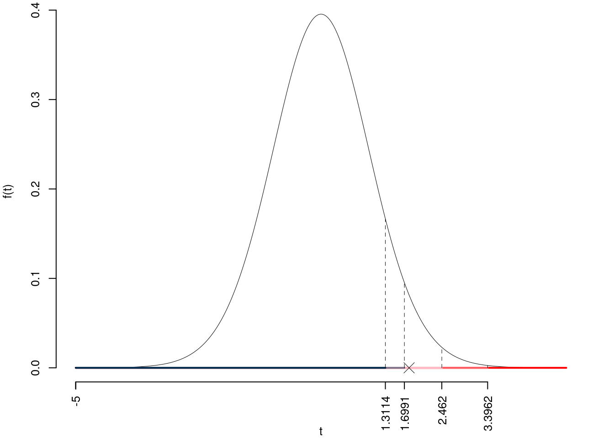
Il \(p_{\text{value}}\) è
\[ p_{\text{value}} = P(T_{30-1}>1.8)=0.041537 \]
Attenzione il calcolo del \(p_\text{value}\) con la \(T\) è puramente illustrativo e non può essere riprodotto senza una calcolatrice statistica adeguata.\[ 0.01 < p_\text{value}= 0.041537 \leq 0.05 \]
Esercizio 6
In uno studio sulla formazione aziendale, in un campione di \(n=30\) dipendenti, sono state analizzate le ore di formazione (in ore, \(X\)) e il punteggio di performance (in opportuna, \(Y\)).
Si osservano le seguenti statistiche: \(\sum_{i=1}^{30}x_i=1036.68\), \(\sum_{i=1}^{30}y_i=538.81\), \(\sum_{i=1}^{30}x_i^2=39787.25\), \(\sum_{i=1}^{30}y_i^2=10684.19\) e \(\sum_{i=1}^{30}x_iy_i=20527.76\).
6.a (Punti 14/105 \(\rightarrow\) 4.13/31) Si è osservato \(x_7=39.46\) e \(y_7=18.26\), stimare il modello di regressione dove \(Y\) viene spiegata da \(X\) e calcolare il residuo per il punto \(i=7\).
\[\begin{eqnarray*} \bar x &=&\frac 1 n\sum_{i=1}^n x_i = \frac {1}{ 30 } 1036.68 = 34.56 \\ \bar y &=&\frac 1 n\sum_{i=1}^n y_i = \frac {1}{ 30 } 538.81 = 17.96 \\ \hat\sigma_X^2&=&\frac 1 n\sum_{i=1}^n x_i^2-\bar x^2=\frac {1}{ 30 } 39787 - 34.556 ^2= 132.1 \\ \hat\sigma_Y^2&=&\frac 1 n\sum_{i=1}^n y_i^2-\bar y^2=\frac {1}{ 30 } 10684 - 17.9603 ^2= 33.57 \\ \text{cov}(X,Y)&=&\frac 1 n\sum_{i=1}^n x_i~y_i-\bar x\bar y=\frac {1}{ 30 } 20528 - 34.556 \cdot 17.9603 = 63.62 \\ \hat\beta_1 &=& \frac{\text{cov}(X,Y)}{\hat\sigma_X^2} \\ &=& \frac{ 63.62 }{ 132.1 } = 0.4815 \\ \hat\beta_0 &=& \bar y - \hat\beta_1 \bar x\\ &=& 17.96 - 0.4815 \times 34.556 = 1.321 \end{eqnarray*}\]\[\begin{eqnarray*} \hat y_i &=&\hat\beta_0+\hat\beta_1 x_i=\\ &=& 1.321 + 0.4815 \times 39.46 = 20.32 \\ \hat \varepsilon_i &=& y_i-\hat y_i\\ &=& 18.26 - 20.32 = -2.062 \end{eqnarray*}\]
6.b (Punti 3/105 \(\rightarrow\) 0.89/31) Dare un’interpretazione dei parametri di regressione stimati.
6.c (Punti 2/105 \(\rightarrow\) 0.59/31) Perché la previsione per \(x=35\) è più affidabile di quella per \(x=346\)?
6.d (Punti 2/105 \(\rightarrow\) 0.59/31) Cosa significa che \(r\) è un numero puro?
6.e (Punti 2/105 \(\rightarrow\) 0.59/31) Se in un modello di regressione \(r=0.65\), \(\hat\sigma_X=1.1\) e \(\hat\sigma_Y=0.9\), calcolare \(\hat\beta_1\).
Per calcolare \(\hat\beta_1\) in un modello di regressione, si usa la formula:
\[ \hat\beta_1 = r \frac{\hat\sigma_Y}{\hat\sigma_X} \]
Dati: - \(r = 0.65\) - \(\hat\sigma_X = 1.1\) - \(\hat\sigma_Y = 0.9\)
Calcolo:
\[ \hat\beta_1 = 0.65 \times \frac{0.9}{1.1} = 0.65 \times 0.8182 = 0.532 \]
Prova di Statistica 24/07/06 -2
Esercizio 1
Su un campione di \(200\) di piccole e medie imprese dell’Emilia-Romagna sono stati rilevati gli investimenti in infrastrutture tecnologiche (dati espressi in migliaia di euro). Qui di seguito la distribuzione delle frequenze assolute:
| \([\text{x}_j,\) | \(\text{x}_{j+1})\) | \(n_j\) |
|---|---|---|
| 0 | 8 | 34 |
| 8 | 12 | 76 |
| 12 | 14 | 69 |
| 14 | 16 | 21 |
| 200 |
1.a (Punti 14/105 \(\rightarrow\) 4.13/31) Individuare l’intervallo modale.
| \([\text{x}_j,\) | \(\text{x}_{j+1})\) | \(n_j\) | \(f_j\) | \(b_j\) | \(h_j\) |
|---|---|---|---|---|---|
| 0 | 8 | 34 | 0.170 | 8 | 2.125 |
| 8 | 12 | 76 | 0.380 | 4 | 9.500 |
| 12 | 14 | 69 | 0.345 | 2 | 17.250 |
| 14 | 16 | 21 | 0.105 | 2 | 5.250 |
| 200 | 1.000 | 16 |
1.b (Punti 3/105 \(\rightarrow\) 0.89/31) Quante imprese investono tra \(x_{0.25}\) il 25-esimo e \(x_{0.75}\) il 75-esimo percentile?
\[\begin{eqnarray*} \%(8.8421<X<13.1594) &=& (12-8.8421)\times h_{2}+ (13.1594-12)\times h_{3} \\ &=& (3.1579)\times 9.5+ (1.1594)\times 17.25 \\ &=& 0.5 \times(100)\\ \#( 8.842 < X < 13.16 ) &\approx& 100 \end{eqnarray*}\]
1.c (Punti 2/105 \(\rightarrow\) 0.59/31) La media è pari a \(\bar x=10.54\), senza disegnare l’istogramma, che forma distributiva dobbiamo aspettarci?
1.d (Punti 2/105 \(\rightarrow\) 0.59/31) La spesa media della regione Emilia-Romagna, calcolata su 200 famiglie è pari \(\bar x_{ER}=10.54\), quella della Lombardia, calcolata su 215 famiglie è pari \(\bar x_{L}=10.6039\), mentre quella del Veneto, calcolata su 195 famiglie è pari \(\bar x_{V}=9.912\). Qual è la spesa media complessiva delle tre regioni?
Per trovare la spesa media delle tre regioni aggregate, dobbiamo considerare sia le medie delle singole regioni sia il numero di famiglie su cui sono state calcolate. La formula per la media aggregata \(\bar{x}_{agg}\) è:
\[\begin{eqnarray*} \bar{x}_{agg} &=& \frac{n_{ER} \bar{x}_{ER} + n_{L} \bar{x}_{L} + n_{V} \bar{x}_{V}}{n_{ER} + n_{L} + n_{V}}\\ &=& \frac{200\cdot10.54+215\cdot10.6039+195\cdot9.912}{200+215+195}\\ &=& 10.3618 \end{eqnarray*}\]
Dove:
- \(n_{ER}\) è il numero di famiglie in Emilia-Romagna
- \(n_{L}\) è il numero di famiglie in Lombardia
- \(n_{V}\) è il numero di famiglie in Veneto
- \(\bar{x}_{ER}\), \(\bar{x}_{L}\), \(\bar{x}_{V}\) sono le spese medie delle rispettive regioni
Esercizio 2
2.a (Punti 14/105 \(\rightarrow\) 4.13/31) Sia \(X\) il numero di telefonate in arrivo ad un centralino di emergenza, si assume \(X\sim\text{Pois}(1.3)\). Calcolare la probabilità che \(X\geq 1\).
\[\begin{eqnarray*} P( X \geq 1 ) &=& 1-P( X < 1 ) \\ &=& 1-\left( \frac{ 1.3 ^{ 0 }}{ 0 !}e^{- 1.3 } \right)\\ &=& 1-( 0.2725 )\\ &=& 1- 0.2725 \\ &=& 0.7275 \end{eqnarray*}\]
2.b (Punti 3/105 \(\rightarrow\) 0.89/31) Sia \(X\sim\text{Pois}(1.3)\), posto \(A=\{X\geq 2\}\), \(B=\{X\geq 1\}\), calcolare \(P(A|B)\).
\[\begin{eqnarray*} P(B) &=& 0.7275\\ P(A\cap B) &=& P( \{X \geq 1\} \cap \{X \geq 2\})\\ &=& P( X \geq 2)\\ &=& 0.3732\\ P(A|B) &=& \frac{P(A\cap B)}{P(B)}\\ &=& \frac{0.3732}{0.7275}\\ &=& 0.513 \end{eqnarray*}\]
2.c (Punti 2/105 \(\rightarrow\) 0.59/31) Se \(A\) e \(B\), sono due eventi tali che \(P(A)=0.2\), \(P(B)=0.6\), e \(P(A\cup B)=0.8\), \(A\) e \(B\) sono indipendenti? Perché?
2.d (Punti 2/105 \(\rightarrow\) 0.59/31) Sia \(X\) una variabile casuale con supporto \(S_X=\{-1,0,1\}\) e con funzione di probabilità \[ f(x)=\begin{cases} \frac 13, &\text{ se $x=-1$}\\ \frac 13, &\text{ se $x=\phantom{-} 0$}\\ \frac 13, &\text{ se $x=+ 1$}\\ \end{cases} \] Disegnare le sua funzione di ripartizione, \(F(x)\), nell’intervallo \(-2\leq x\leq 3\).
Esercizio 3
3.a (Punti 14/105 \(\rightarrow\) 4.13/31) Un’urna contiene 2 palline col numero \(\mbox{-2}\), e 2 palline col numero \(\mbox{-1}\) e 6 palline col numero \(\mbox{+2}\). Si estrae 50 volte con reintroduzione. Qual è la probabilità che la proporzione di palline maggiori di zero sia compresa tra 0.65 e 0.70?
Teorema del Limite Centrale (proporzione)
Siano \(X_1\),…,\(X_n\), \(n=50\) VC IID, tc \(X_i\sim\text{Ber}(\pi=0.6)\)\(,\forall i\), posto: \[ \hat\pi=\frac{S_n}n = \frac{X_1 + ... + X_n}n \] allora:\[\begin{eqnarray*} \hat\pi & \mathop{\sim}\limits_{a}& N(\pi,\pi(1-\pi)/n) \\ &\sim & N\left(0.6,\frac{0.6\cdot(1-0.6)}{50}\right) \\ &\sim & N(0.6,0.0048) \end{eqnarray*}\]\[\begin{eqnarray*} P( 0.65 < \hat\pi \leq 0.7 ) &=& P\left( \frac { 0.65 - 0.6 }{\sqrt{ 0.0048 }} < \frac { \hat\pi - \pi }{ \sqrt{\pi(1-\pi)/n} } \leq \frac { 0.7 - 0.6 }{\sqrt{ 0.0048 }}\right) \\ &=& P\left( 0.72 < Z \leq 1.44 \right) \\ &=& \Phi( 1.44 )-\Phi( 0.72 )\\ &=& 0.9251 - 0.7642 \\ &=& 0.1609 \end{eqnarray*}\]
Esercizio 4
4.a (Punti 3/105 \(\rightarrow\) 0.89/31) Si consideri il modello di Bernoulli \(X\sim\text{Ber}(\pi)\). Sia \(\hat\pi\) lo stimatore di massima verosimiglianza per \(\pi\)
\[ \hat\pi = \frac 1n \sum_{i=1}^n X_i \]
Estratti \(n=25\) dati si è ottenuto \(\sum_{i=1}^n x_i = 15\). Ricavare il suo Standard Error teorico e quello stimato.
4.b (Punti 3/105 \(\rightarrow\) 0.89/31) Siano \(h_1\) e \(h_2\) due stimatori per \(\theta\), cosa significa che \(h_1\) è più efficiente di \(h_2\)?
4.c (Punti 3/105 \(\rightarrow\) 0.89/31) Siano \(T_1\) e \(T_2\) due test per lo stesso sistema di ipotesi con la stessa significatività \(\alpha\), siano \(\beta_1\) la probabilità di errore di secondo tipo del test \(T_1\) e \(\beta_2\) la probabilità di errore di secondo tipo del test \(T_2\). Cosa significa dire che \(T_1\) è più potente di \(T_2\)?
4.d (Punti 3/105 \(\rightarrow\) 0.89/31) In un’indagine sull’opinione sull’autonomia differenziata sono stati intervistate 180 persone che vivono al nord e 130 che vivono al sud: 108 su 180 che vivono al nord sono favorevoli al reddito di cittadinanza mentre 55 su 130 che vivono al sud sono favorevoli. Messo a test
\[ \begin{cases} H_0: \pi_\text{N} = \pi_\text{S} \\ H_1: \pi_\text{N} > \pi_\text{S} \end{cases} \]
è risultato \(p_{\text{value}} =0.001041\). Possiamo concludere che al nord siano più propensi all’autonomia che al sud? Perché?
Esercizio 5
5.a (Punti 14/105 \(\rightarrow\) 4.13/31) In uno studio sull’efficacia di due metodi di insegnamento della matematica, si è proceduto facendo seguire il metodo \(A\) ad un campione di 15 studenti (gruppo \(A\)) e il metodo \(B\) ad un secondo campione di 18 studenti (gruppo \(B\)). Si è quindi misurata la prestazione degli studenti con un test finale. La prestazione media del gruppo \(A\) risulta pari a 78 con una deviazione standard pari a 8.3, mentre la prestazione media del gruppo \(B\) risulta pari a 74 con una deviazione standard pari a 7.5. Sotto ipotesi di eterogeneità verificare l’ipotesi che la prestazione media dei due metodi di insegnamento sia uguale, contro l’alternativa che il metodo \(A\) produca prestazioni mediamente migliori di quello \(B\), per \(\alpha=0.1,0.05,0.01,0.001\) e dare una valutazione approssimativa del \(p_\text{value}\) (ad esempio il \(p_\text{value}\) è minore di 0.001, compreso tra 0.05 e tra 0.01, ecc.).
Test \(t\) per due medie, (eterogeneità)
\(\fbox{A}\) FORMULAZIONE DELLE IPOTESI
\[\begin{cases} H_0: \mu_\text{A} = \mu_\text{B} \\ H_1: \mu_\text{A} > \mu_\text{B} \end{cases}\]
\(\fbox{B}\) SCELTA E CALCOLO STATISTICA-TEST, \(T\) \[ S^2_\text{ A }=\frac{n_\text{ A }}{n_\text{ A }-1}\hat\sigma^2_\text{ A }=\frac{ 15 }{ 15 -1} 8.3 ^2= 73.81 \qquad S^2_\text{ B }=\frac{n_\text{ B }}{n_\text{ B }-1}\hat\sigma^2_\text{ B }=\frac{ 18 }{ 18 -1} 7.5 ^2= 59.56 \]
\[\begin{eqnarray*} \frac{\hat\mu_\text{ A } - \hat\mu_\text{ B }} {\sqrt{\frac {S^2_\text{ A }}{n_\text{ A }}+\frac {S^2_\text{ B }}{n_\text{ B }}}}&\sim&t_{n_\text{ A }+n_\text{ B }-2}\\ t_{\text{obs}} &=& \frac{ ( 78 - 74 )} {\sqrt{\frac{ 73.81 }{ 15 }+\frac{ 59.56 }{ 18 }}} = 1.394 \, . \end{eqnarray*}\]
\(\fbox{C}\) CONCLUSIONE
Consideriamo \(\alpha=0.1, 0.05, 0.01, 0.001\)
I valori critici sono
\(t_{33-2;0.1}=1.3095\); \(t_{33-2;0.05}=1.6955\); \(t_{33-2;0.01}=2.4528\); \(t_{33-2;0.001}=3.3749\)
Siccome \(1.3095<t_\text{obs}=1.3944<1.6955\), indecisione sul rifiuto di \(H_0\) al 10%,
\(0.05<p_\text{value}<0.1\), marginalmente significativo \(\fbox{.}\).
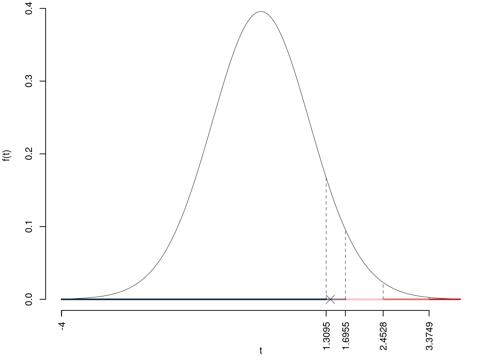
Il \(p_{\text{value}}\) è
\[ p_{\text{value}} = P(T_{33-2}>1.39)=0.086563 \]
Attenzione il calcolo del \(p_\text{value}\) con la \(T\) è puramente illustrativo e non può essere riprodotto senza una calcolatrice statistica adeguata.\[ 0.05 < p_\text{value}= 0.086563 \leq 0.1 \]
Esercizio 6
In uno studio sulla relazione tra tempo libero e stress, in un campione di \(n=40\) individui, sono state analizzate le ore settimanali dedicate al tempo libero (in ore, \(X\)) e i livelli di stress misurati (su una scala da 1 a 10, \(Y\)).
Si osservano le seguenti statistiche: \(\sum_{i=1}^{40}x_i=236.09\), \(\sum_{i=1}^{40}y_i=-460.84\), \(\sum_{i=1}^{40}x_i^2=1754.05\), \(\sum_{i=1}^{40}y_i^2=15390.64\) e \(\sum_{i=1}^{40}x_iy_i=-4566.08\).
6.a (Punti 14/105 \(\rightarrow\) 4.13/31) Si è osservato \(x_4=8.3\) e \(y_4=-23.45\), stimare il modello di regressione dove \(Y\) viene spiegata da \(X\) e calcolare il residuo per il punto \(i=4\).
\[\begin{eqnarray*} \bar x &=&\frac 1 n\sum_{i=1}^n x_i = \frac {1}{ 40 } 236.09 = 5.902 \\ \bar y &=&\frac 1 n\sum_{i=1}^n y_i = \frac {1}{ 40 } (-460.84) = -11.52 \\ \hat\sigma_X^2&=&\frac 1 n\sum_{i=1}^n x_i^2-\bar x^2=\frac {1}{ 40 } 1754 - 5.9023 ^2= 9.015 \\ \hat\sigma_Y^2&=&\frac 1 n\sum_{i=1}^n y_i^2-\bar y^2=\frac {1}{ 40 } 15391 - (-11.521) ^2= 252 \\ \text{cov}(X,Y)&=&\frac 1 n\sum_{i=1}^n x_i~y_i-\bar x\bar y=\frac {1}{ 40 } -4566 - 5.9023 \cdot (-11.521) = -46.15 \\ \hat\beta_1 &=& \frac{\text{cov}(X,Y)}{\hat\sigma_X^2} \\ &=& \frac{ -46.15 }{ 9.015 } = -5.12 \\ \hat\beta_0 &=& \bar y - \hat\beta_1 \bar x\\ &=& -11.52 - (-5.1197) \times 5.9023 = 18.7 \end{eqnarray*}\]\[\begin{eqnarray*} \hat y_i &=&\hat\beta_0+\hat\beta_1 x_i=\\ &=& 18.7 + (-5.1197) \times 8.3 = -23.8 \\ \hat \varepsilon_i &=& y_i-\hat y_i\\ &=& -23.45 - -23.8 = 0.3467 \end{eqnarray*}\]
6.b (Punti 3/105 \(\rightarrow\) 0.89/31) Scomporre la Total Sum of Squares.
\[\begin{eqnarray*} TSS &=& n\hat\sigma^2_Y\\ &=& 40 \times 252 \\ &=& 10081 \\ ESS &=& R^2\cdot TSS\\ &=& 0.9375 \cdot 10081 \\ &=& 9451 \\ RSS &=& (1-R^2)\cdot TSS\\ &=& (1- 0.9375 )\cdot 10081 \\ &=& 629.9 \\ TSS &=& ESS+RSS \\ 10081 &=& 9451 + 629.9 \end{eqnarray*}\]
6.c (Punti 2/105 \(\rightarrow\) 0.59/31) Interpretare il diagramma dei residui.

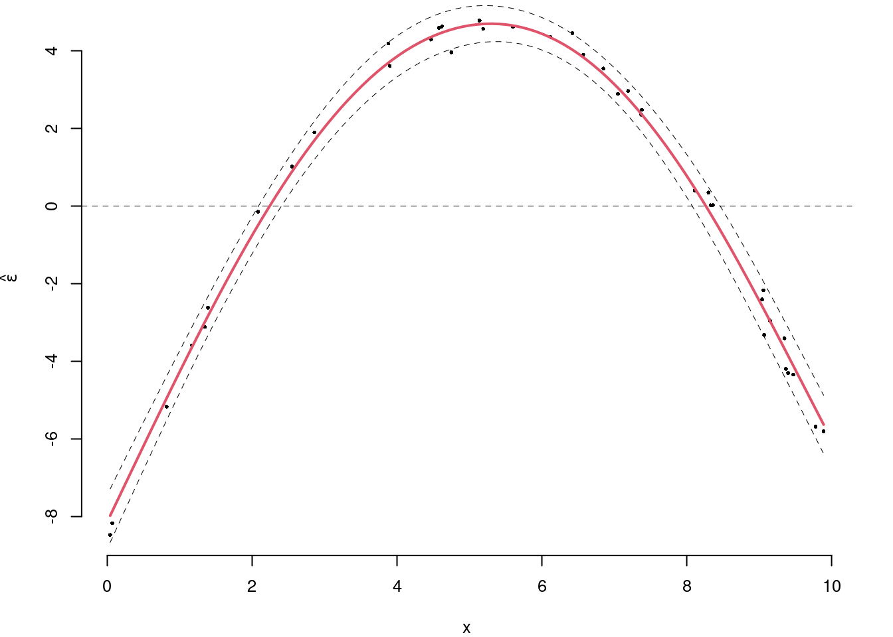
6.d (Punti 2/105 \(\rightarrow\) 0.59/31) Cosa significa che \(r\) è invariante ai cambiamenti di scala?
6.e (Punti 2/105 \(\rightarrow\) 0.59/31) Se in un modello di regressione \(r^2=0\) significa che non c’è relazione tra \(X\) ed \(Y\)?
Prova di Statistica 24/07/06 -3
Esercizio 1
Su un campione di \(200\) di piccole e medie imprese dell’Emilia-Romagna sono stati rilevati gli investimenti in infrastrutture tecnologiche (dati espressi in migliaia di euro). Qui di seguito la distribuzione delle densità percentuali:
| \([\text{x}_j,\) | \(\text{x}_{j+1})\) | \(h_j\) |
|---|---|---|
| 0.0 | 3.0 | 4 |
| 3.0 | 4.5 | 16 |
| 4.5 | 5.5 | 28 |
| 5.5 | 7.0 | 16 |
| 7.0 | 10.0 | 4 |
1.a (Punti 14/105 \(\rightarrow\) 4.13/31) Calcolare il valore approssimativo della mediana.
| \([\text{x}_j,\) | \(\text{x}_{j+1})\) | \(n_j\) | \(f_j\) | \(b_j\) | \(h_j\) | \(F_j\) |
|---|---|---|---|---|---|---|
| 0.0 | 3.0 | 24 | 0.12 | 3.0 | 4 | 0.12 |
| 3.0 | 4.5 | 48 | 0.24 | 1.5 | 16 | 0.36 |
| 4.5 | 5.5 | 56 | 0.28 | 1.0 | 28 | 0.64 |
| 5.5 | 7.0 | 48 | 0.24 | 1.5 | 16 | 0.88 |
| 7.0 | 10.0 | 24 | 0.12 | 3.0 | 4 | 1.00 |
| 200 | 1.00 | 10.0 |
\[\begin{eqnarray*} p &=& 0.5 , \text{essendo }F_{ 3 }= 0.64 > 0.5 \Rightarrow j_{ 0.5 }= 3 \\ x_{ 0.5 } &=& x_{\text{inf}; 3 } + \frac{ { 0.5 } - F_{ 2 }} {f_{ 3 }} \cdot b_{ 3 } \\ &=& 4.5 + \frac {{ 0.5 } - 0.36 } { 0.28 } \cdot 1 \\ &=& 5 \end{eqnarray*}\] 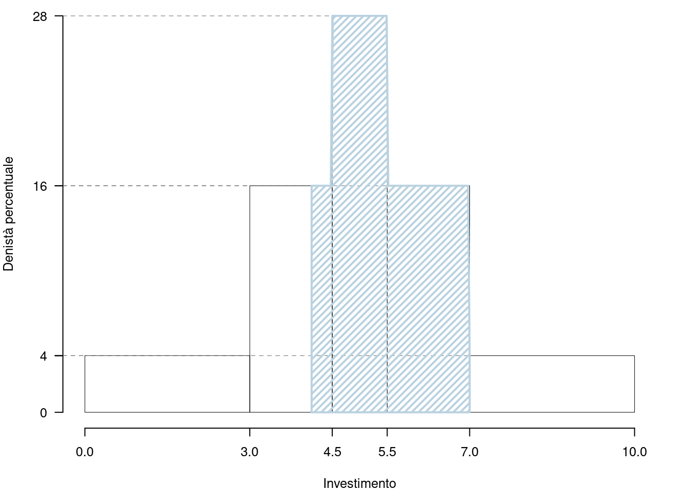
1.b (Punti 3/105 \(\rightarrow\) 0.89/31) Qual è la percentuale di imprese che investe tra il 30-esimo percentile \(x_{0.30}\) e 7?
\[ \%(x_{0.30}<X<7) = (F(7)-F(x_{0.30}))\times 100 = (0.88- 0.30)\times 100=0.58\times 100 \]
1.c (Punti 2/105 \(\rightarrow\) 0.59/31) La media è pari a \(\bar x=5\), senza disegnare l’istogramma, che forma distributiva dobbiamo aspettarci?
1.d (Punti 2/105 \(\rightarrow\) 0.59/31) Se \(\{x_1,...,x_n\}\) è una serie di dati con media aritmetica \(\bar x=\frac 1n\sum_i x_i\) e varianza \(\sigma_X^2=\frac 1n\sum_i(x-\bar x)^2\). Posto \[ y_i = 1-x_i,~~\forall i=1,...,n \] ricavare media aritmetica e varianza delle \(\{y_1,...,y_n\}\).
\[ \bar y = 1-\bar x;~~~~\sigma_Y^2=(-1)^2\sigma_X^2 \]
Esercizio 2
2.a (Punti 14/105 \(\rightarrow\) 4.13/31) Sia \(X\sim N(1,1.5)\) e sia \(Y\sim N(-1,1.5)\), \(X\) e \(Y\) indipendenti sia \(A=\{X>0\}\) e \(B=\{Y<0\}\). Calcolare \(P(A\cup B)\).
\[\begin{eqnarray*} P( X > 0 ) &=& P\left( \frac { X - \mu }{ \sigma } > \frac { 0 - 1 }{\sqrt{ 1.5 }} \right) \\ &=& P\left( Z > -0.82 \right) \\ &=& 1-P(Z< -0.82 )\\ &=& 1-(1-\Phi( 0.82 )) \\ &=& 0.7939 \end{eqnarray*}\]\[\begin{eqnarray*} P( Y < 0 ) &=& P\left( \frac { Y - \mu }{ \sigma } < \frac { 0 - ( -1 ) }{\sqrt{ 1.5 }} \right) \\ &=& P\left( Z < 0.82 \right) \\ &=& \Phi( 0.82 ) \\ &=& 0.7939 \end{eqnarray*}\]\[\begin{eqnarray} P( A \cup B ) &=& P( A )+P( B )-P( A \cap B ) \\ &=& P( A )+P( B )-P( A )\cdot ( B ) \\ &=& 0.7939 + 0.7939 - 0.7939 \times 0.7939 \\ &=& 0.9575 \end{eqnarray}\]
2.b (Punti 3/105 \(\rightarrow\) 0.89/31) , posto \(W=(X+Y)/2\), calcolare \(P(W<1|W>-1)\).
\[ W\sim N(+1-1,(1/2)^2(1.5+1.5)) \]
\[ P(W<1|W>-1)=\frac{P(-1<W<1)}{P(W>-1)}=\frac{0.7518}{0.8759}=0.8583 \]
2.c (Punti 2/105 \(\rightarrow\) 0.59/31) Se \(A\neq\emptyset\) e \(B\neq\emptyset\), sono due eventi tali che \(P(A)=0.2\), \(P(B)=0.6\), e \(P(A\cup B)=0.6\), \(A\) e \(B\) sono indipendenti? Perché?
2.d (Punti 2/105 \(\rightarrow\) 0.59/31) Sia \(X\sim\text{Binom}(n=2,\pi=0.5)\) e sia \(F\) la sua funzione di ripartizione. Disegnare \(F(x)\) nell’intervallo \(-1\leq x\leq 3\)
\[\begin{eqnarray*} P( X \leq 0 ) &=& \binom{ 2 }{ 0 } 0.5 ^{ 0 }(1- 0.5 )^{ 2 - 0 } \\ &=& 0.25 \\ &=& 0.25 \end{eqnarray*}\] \[\begin{eqnarray*} P( X \leq 1 ) &=& \binom{ 2 }{ 0 } 0.5 ^{ 0 }(1- 0.5 )^{ 2 - 0 }+\binom{ 2 }{ 1 } 0.5 ^{ 1 }(1- 0.5 )^{ 2 - 1 } \\ &=& 0.25+0.5 \\ &=& 0.75 \end{eqnarray*}\] \[\begin{eqnarray*} P( X \leq 2 ) &=& \binom{ 2 }{ 0 } 0.5 ^{ 0 }(1- 0.5 )^{ 2 - 0 }+\binom{ 2 }{ 1 } 0.5 ^{ 1 }(1- 0.5 )^{ 2 - 1 }+\binom{ 2 }{ 2 } 0.5 ^{ 2 }(1- 0.5 )^{ 2 - 2 } \\ &=& 0.25+0.5+0.25 \\ &=& 1 \end{eqnarray*}\]
Esercizio 3
3.a (Punti 14/105 \(\rightarrow\) 4.13/31) Un’urna contiene 2 palline col numero \(\mbox{-2}\), e 2 palline col numero \(\mbox{-1}\) e 6 palline col numero \(\mbox{+2}\). Si estrae 150 volte con reintroduzione. Qual è la probabilità che la somma sia minore di 80?
\[\begin{eqnarray*} \mu &=& E(X_i) = \sum_{x\in S_X}x P(X=x)\\ &=& ( -2 ) \frac { 2 }{ 10 }+( -1 ) \frac { 2 }{ 10 }+ 2 \frac { 6 }{ 10 } \\ &=& 0.6 \\ \sigma^2 &=& V(X_i) = \sum_{x\in S_X}x^2 P(X=x)-\mu^2\\ &=&\left( ( -2 ) ^2\frac { 2 }{ 10 }+( -1 ) ^2\frac { 2 }{ 10 }+ 2 ^2\frac { 6 }{ 10 } \right)-( 0.6 )^2\\ &=& 3.04 \end{eqnarray*}\] Teorema del Limite Centrale (somma VC qualunque)
Siano \(X_1\),…,\(X_n\), \(n=150\) VC IID, tc \(E(X_i)=\mu=0.6\) e \(V(X_i)=\sigma^2=3.04,\forall i\), posto: \[ S_n = X_1 + ... + X_n \] allora:\[\begin{eqnarray*} S_n & \mathop{\sim}\limits_{a}& N(n\mu,n\sigma^2) \\ &\sim & N(150\cdot0.6,150\cdot3.04) \\ &\sim & N(90,456) \end{eqnarray*}\]\[\begin{eqnarray*} P( S_n < 80 ) &=& P\left( \frac { S_n - n\mu }{ \sqrt{n\sigma^2} } < \frac { 80 - 90 }{\sqrt{ 456 }} \right) \\ &=& P\left( Z < -0.47 \right) \\ &=& 1-\Phi( 0.47 ) \\ &=& 0.3192 \end{eqnarray*}\]
Esercizio 4
4.a (Punti 3/105 \(\rightarrow\) 0.89/31) Si consideri il modello di Poisson \(X\sim\text{Pois}(\lambda)\). Sia \(\hat\lambda\) lo stimatore di massima verosimiglianza per \(\mu\)
\[ \hat\lambda = \frac 1n \sum_{i=1}^n X_i \]
Estratti \(n=25\) dati si è osservato \(\sum_{i=1}^nx_i=54\). Ricavare il suo Standard Error teorico e quello stimato.
Dato il modello binomiale \(X \sim \text{Pois}(\lambda)\) e \(\hat\lambda = \frac{1}{n} \sum_{i=1}^n X_i\), con \(n = 25\) e \(\sum_{i=1}^n x_i = 54\):
Standard Error Teorico \[ SE(\hat\lambda) = \sqrt{\frac{\lambda}{n}} \]
Standard Error Stimato \[ \hat\lambda = \frac{54}{25} = 2.16 \] \[ SE(\hat\lambda) = \sqrt{\frac{2.16}{25}} = \sqrt{0.0864} \approx 0.294 \]
4.b (Punti 3/105 \(\rightarrow\) 0.89/31) Cosa significa che uno stimatore è asintoticamente corretto?
4.c (Punti 3/105 \(\rightarrow\) 0.89/31) Definire la significatività e la potenza di un test.
4.d (Punti 3/105 \(\rightarrow\) 0.89/31)L’Associazione dei Commercianti della Toscana ha condotto un’indagine sulle preferenze dei metodi di pagamento tra i clienti dei negozi della regione. Durante una settimana, sono stati intervistati 350 clienti di vari negozi. L’associazione è interessata a capire se le preferenze dei clienti per i metodi di pagamento differiscono dalla media nazionale.
Qui di seguito è riportata la tabella delle preferenze dei clienti dei negozi della Toscana e le percentuali nazionali:
| Contanti | Carta di Credito | Carta di Debito | Bonifico Bancario | Pagamento Mobile | Totale | |
|---|---|---|---|---|---|---|
| Dati Associazione | \(110\) | \(130\) | \(40\) | \(35\) | \(35\) | \(350\) |
| Media Nazionale | \(28.57\%\) | \(34.29\%\) | \(14.29\%\) | \(8.57\%\) | \(14.29\%\) | \(100\%\) |
Eseguito il test del \(\chi^2\) per verificare la conformità delle due distribuzioni si ottiene un \(p_\text{value}=0.0667\). Le due distribuzioni possono essere considerate uguali?
Esercizio 5
5.a (Punti 4/105 \(\rightarrow\) 1.18/31) Su un campione di \(n = 120\) startup tecnologiche italiane, è stato chiesto se abbiano implementato misure di cybersecurity avanzate. Lo studio ha riportato che 84 startup su 120 (il 70% del campione) hanno implementato queste misure.
Costruire un intervallo di confidenza al 95% per \(\pi\), la quota di startup italiane che hanno implementato misure di cybersecurity avanzate.
\(1-\alpha =0.95\) e quindi \(\alpha=0.05\rightarrow \alpha/2=0.025\)
\[ \hat\pi = \frac{S_n}n = \frac{ 84 }{ 120 }= 0.7 \]
\[\begin{eqnarray*} Idc: & & \hat\pi \pm z_{\alpha/2} \times \sqrt{\frac{\hat\pi(1-\hat\pi)}{n}} \\ & & 0.7 \pm 1.96 \times \sqrt{\frac{ 0.7 (1- 0.7 )}{ 120 }} \\ & & 0.7 \pm 1.96 \times 0.04183 \\ & & [ 0.618 , 0.782 ] \end{eqnarray*}\]
5.b (Punti 10/105 \(\rightarrow\) 2.95/31) Un’indagine molto più ampia condotta su startup europee ha mostrato che la percentuale di startup con misure di cybersecurity avanzate è del 80%. Testare l’ipotesi che in Italia la quota di startup con misure di cybersecurity avanzate sia uguale a quella europea contro l’alternativa che sia minore. Risolvere col \(p_\text{value}\) e confrontarlo per \(\alpha=0.1,0.05,0.01,0.001\).
Test \(Z\) per una proporzione
La stima \[\hat\pi=\frac { 84 } { 120 }= 0.7 \]
\(\fbox{A}\) FORMULAZIONE DELLE IPOTESI
\[\begin{cases} H_0: \pi = \pi_0=0.8 \\ H_1: \pi < \pi_0=0.8 \end{cases}\]
\(\fbox{B}\) SCELTA E CALCOLO STATISTICA-TEST, \(Z\) Test Binomiale per \(n\) grande: \(\Rightarrow\) z-Test.
\[\begin{eqnarray*} \frac{\hat\pi - \pi_{0}} {\sqrt {\pi_0(1-\pi_0)/\,n}}&\sim&N(0,1)\\ z_{\text{obs}} &=& \frac{ ( 0.7 - 0.8 )} {\sqrt{ 0.8 (1- 0.8 )/ 120 }} = -2.739 \,. \end{eqnarray*}\]
\(\fbox{C}\) CONCLUSIONE
Il \(p_{\text{value}}\) è
\[ p_{\text{value}} = P(Z<-2.74)=0.003085 \]
\[ 0.001 < p_\text{value}= 0.003085 \leq 0.01 \]
Rifiuto \(H_0\) all’1%,
\(0.001<p_\text{value}<0.01\), molto significativo \(\fbox{**}\).
Esercizio 6
In uno studio sull’uso delle nuove tecnologie, in un campione di \(n=50\) individui, sono stati analizzati il tempo passato sui social (in ore al giorno, \(X\)) e il numero di libri letti in un anno \(Y\).
6.a (Punti 14/105 \(\rightarrow\) 4.13/31) Si è osservato \(x_5=3.55\) e \(y_5=6.7921\), stimare il modello di regressione dove \(Y\) viene spiegata da \(X\) e calcolare il residuo per il punto \(i=5\).
\[\begin{eqnarray*} \bar x &=&\frac 1 n\sum_{i=1}^n x_i = \frac {1}{ 50 } 204 = 4.08 \\ \bar y &=&\frac 1 n\sum_{i=1}^n y_i = \frac {1}{ 50 } 260 = 5.2 \\ \hat\sigma_X^2&=&\frac 1 n\sum_{i=1}^n x_i^2-\bar x^2=\frac {1}{ 50 } 1150 - 4.08 ^2= 6.354 \\ \hat\sigma_Y^2&=&\frac 1 n\sum_{i=1}^n y_i^2-\bar y^2=\frac {1}{ 50 } 1733 - 5.2 ^2= 7.62 \\ \text{cov}(X,Y)&=&\frac 1 n\sum_{i=1}^n x_i~y_i-\bar x\bar y=\frac {1}{ 50 } 738 - 4.08 \cdot 5.2 = -6.449 \\ \hat\beta_1 &=& \frac{\text{cov}(X,Y)}{\hat\sigma_X^2} \\ &=& \frac{ -6.449 }{ 6.354 } = -1.015 \\ \hat\beta_0 &=& \bar y - \hat\beta_1 \bar x\\ &=& 5.2 - (-1.0151) \times 4.08 = 9.341 \end{eqnarray*}\]\[\begin{eqnarray*} \hat y_i &=&\hat\beta_0+\hat\beta_1 x_i=\\ &=& 9.341 + (-1.0151) \times 1.66 = 7.656 \\ \hat \varepsilon_i &=& y_i-\hat y_i\\ &=& 7.007 - 7.656 = -0.6492 \end{eqnarray*}\]
6.b (Punti 3/105 \(\rightarrow\) 0.89/31) Dare un’interpretazione dei parametri di regressione stimati.
6.c (Punti 2/105 \(\rightarrow\) 0.59/31) Definire i punti di leva e indicare una misura per misurarli.
6.d (Punti 2/105 \(\rightarrow\) 0.59/31) Se in un modello di regressione \(r=-1\), cosa significa?
6.e (Punti 2/105 \(\rightarrow\) 0.59/31) Se in un modello di regressione \(r=0.55\), \(\hat\sigma_Y=0.9\) e \(\hat\sigma_X=1.9\), calcolare \(\hat\beta_1\) e \(\hat\alpha_1\), gli stimatori stima del coefficiente angolare dei modelli:
\[\begin{eqnarray*} Y_i &=& \beta_0+\beta_1 Y_i + \varepsilon_i, \qquad E(\varepsilon_i)=0; V(\varepsilon_i)=\sigma_\varepsilon^2\\ X_i &=& \alpha_0+\alpha_1 Y_i + \delta_i, \qquad E(\delta_i)=0; V(\delta_i)=\sigma_\delta^2. \end{eqnarray*}\]